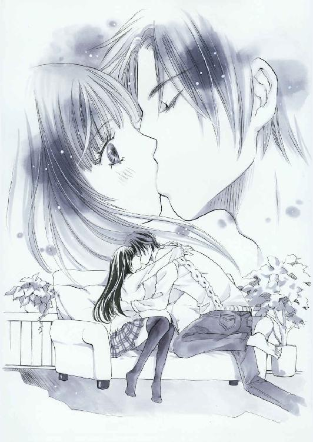
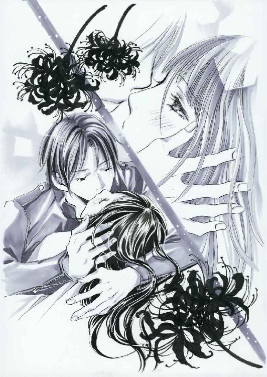
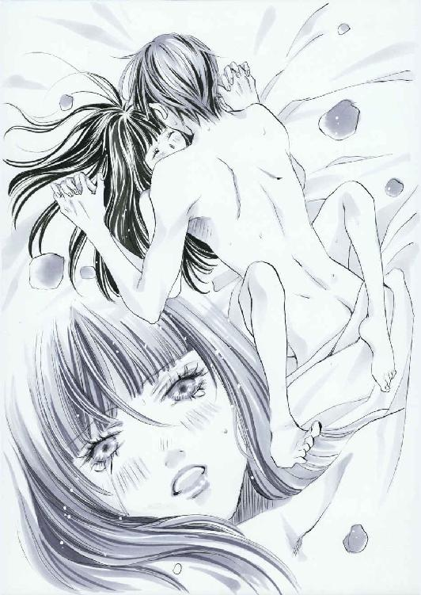

| 陰陽カレ師 (LUNA文庫) | |
| 上主 沙夜 | |
| 天海社／LUNA文庫 (2018) | |
陰陽カレ師
[著]上主沙夜
[イラスト]杉本ふぁりな
除
お囃子の音が聞こえる。
笛の音。太鼓の音。合間合間の絶妙な掛け声が、夜風の加減で大きくなったり小さくなったりしている。
ひいなは立ち止まって周りを見回した。たくさんの人が境内を行き交っている。誰もひいなに目を留めない。小さなひいなは大人の目線の範囲から大きく外れていた。
気づけば家族とはぐれ、ひとりになっていた。
軒を連ねるさまざまな屋台。呼び込みの声。歓声。笑い声。美味しそうな食べ物の匂い――。
さざめきながら流れてゆく人々に混じって、ひいなはちょこちょこと歩いた。
朝顔が描かれた浴衣に買ってもらったばかりのキャラクターのお面を横向きにつけて。慣れない下駄で足の指がちょっと痛い。
ピンクの綿あめを食べながら、知らない子どもに交じって金魚すくいやヨーヨー釣りを眺めた。食べ終わった綿あめの棒を屑籠に放り込み、ふと足元の影に気づいた。
月明かりを受けたひいなの影だ。その輪郭がもぞもぞ動いたかと思うと枝分かれして、ぴょこりと別な影が生えてくる。真っ黒でにょろにょろしていて、ヒレのないウナギみたいだ。
「えいっ」
ひいなはそれを勢いよく下駄で踏んづけた。ピャッと小さな悲鳴を上げて影が消える。と、たちまち別の場所からまた生えてきた。
ひいなはまた踏みつぶした。また生えてくる。また踏みつぶす。それを繰り返すうちに賑やかな屋台の列から離れ、いつしかひいなは人気のない暗がりに迷い込んでいた。
しんしんと降る月明かりの下で奇妙な影踏みに熱中していると、どこからか声がした。
「やめろ。そんなことしても魑魅は増える一方だ」
びっくりして振り返れば、そこには不思議な人物が立っていた。背格好からしてひいなよりいくらか年上の少年のようだ。
「すだま？」
「邪魅ともいう」
ひいなは首を傾げた。ますますわからない。
少年は変わった形の着物を着ていた。当時のひいなは知らなかったが、それは童水干と呼ばれる装束だった。
素足に白木の四角い下駄を突っかけ、顔には張子の白い狐の面をつけている。朱で模様が描かれた狐面は金色の目の真ん中に穴が開いていて、そこからじっと視線が注がれていた。
ひいなの影から枝分かれした黒いものが鞭のように伸びた。少年はこともなげに指先でピンと影を弾いた。とたんにそれはパッと消え去り、二度と生えてはこなかった。
「あっ、消えた！ なんでなんで？ ひいなが踏むと、どんどん増えるのに」
そういうそばからまたニューッと影が生え、海草のようにゆらゆら揺れる。慌ててひいなが踏みつけると、倍に増えてたちまち取り囲まれてしまった。
「だから踏むなって。反応すると余計に魑魅は増えるんだ。放っとくほうがまだマシ」
呆れたように狐の面の下から言い、少年はピシピシと黒い影を弾いて消した。悔しくなったひいなは、口をへの字にしてムーッと少年を睨んだ。
「だって気になるんだもん！ 今のどうやったの？ 教えて」
「おまえには無理」
「なんで!?」
「無理なもんは無理なの。あれが出てきた時点で、おまえにはもう無理」
「わかんなーい！ ずるいー！」
地団駄を踏むと、少年は腰に手を当てて溜息をついた。
「自分で消すのは無理だから、出てこないようにしてやる。それで我慢しろ」
「うん！ いいよ！」
目をキラキラさせてひいなは頷いた。
少年は左手を突き出し、ぎゅっと拳を握った。一心不乱に集中し、関節が浮き立つほど全身全霊を込めて拳を握りしめる。
「神火清明。神水清明。神風清明」
真剣に唱えると、握った拳に三度息を吹きかけた。そして拳を返してひいなに向け、そっと開くと掌に直径二センチほどの美しい水晶玉が載っていた。
「わぁ！ きれい」
少年は水晶玉をひいなの額に押し当てた。
「目を閉じて」
言われるまま、素直に目を閉じる。
「高天原に神留まります、すめらがむつ、かむろぎかむろみのみことをもちて......」
聞いているうちに、額に押し当てられた水晶玉から不思議な熱を感じた。炎のように熱いのに、涼風のように爽やかな、不思議な感覚――。
「......くさぐさのまがごと、つみけがれを、はらいたまえ、きよめたまえと、もうすことのよしを......」
急に全身が燃え上がるような感覚に襲われる。同時に何かが吹き飛ばされ、身体がすーっとした。
「......たいらけく、やすらけく、きこしめしたまえと、かしこみかしこみもうす。――目を開けていいぞ」
水晶玉が額から離れ、ひいなはぱちぱちと瞬きをした。月明かりが妙に眩しい。
少年は狐の面をちょっとずらすと、水晶玉を自分の口許に当てて小声で唱えた。
「天地玄妙行神変通力。――勅」
少年は面を元に戻し、ひいなの手をとって水晶玉を握らせた。その手を両手で包んで少年は告げた。
「いつもこれを肌身離さず持ってるんだ。絶対に誰にも見せちゃだめだぞ。もちろん触らせてもいけない」
「誰にも、って......パパやママもだめなの？ お兄ちゃんにも？」
「だめだ。お守りの効力が薄れてしまう」
幼いながらもひいなは少年の真剣さを感じ取って頷いた。
「うん。絶対見せない」
「誰にも触らせない」
「誰にも触らせない」
繰り返すと、少年は頷いてひいなの手をもう一度ぎゅっと握ってから離した。
水晶玉を月明かりに翳してひいなは声を上げた。
「――あっ、お星さま！」
水晶玉の中央に五芒星――一筆書きの星型が浮かんでいる。
「この星がおまえを守ってくれる」
「ひいな」
「あ？」
「おまえじゃなくて、ひいなだよ。お兄ちゃんの名前は？」
少年は何か言ったようだが、面のせいかくぐもってよく聞こえなかった。聞き返そうとすると、少年はひいなの手を掴んで歩き出した。
「帰ろう。ここは生者が長居する場所じゃない」
手を引かれて歩くうちに、遠くから人界のざわめきが聞こえてくる。
少年は足を止め、真剣にひいなに言い聞かせた。
「これからは水晶玉をずっと身につけてるんだぞ。ただし、絶対人には見せないこと。触らせないこと。わかったな？」
「うん、わかった」
こっくりとひいなは頷いた。少年はちょっとためらってから付け加えた。
「どんなお守りにも効力には限りがある。この水晶も、たぶんもって十年くらいだ」
「十年ってどのくらい？」
「十年は十年だろ」
「よくわかんない......」
「たぶん高校生くらいかな」
自信なげに少年は呟く。彼にもよくわかっていないのかもしれなかった。
「ひいながそんなおねえさんになるのは、ずーっと先だよ」
少年はかすかに笑ったようだった。
「さぁ、行って。もう二度と、月明かりで影踏みするんじゃないぞ」
頷いて、歩き出す。ふと思いついて尋ねた。
「ねぇ。また会える......？」
振り向いたひいなの目に映ったのは、暗闇に射す一条の月光だけ――。
「――――ひいな！」
ぼーっと立っていたひいなは突然肩を掴まれて我に返った。養父母が心配そうな顔で覗き込んでいる。
「ああ、よかった。消えちゃったかと思ったわ」
「勝手にどこかに行っちゃだめじゃないか」
母がホッと溜息をつき、父は軽くひいなを睨んだ。兄はつまらなそうにひいなを一瞥して肩をすくめた。
「ごめんなさい」
ひいなは素直に謝った。いい子にしてなきゃ施設に戻されてしまう。
左右それぞれに父母と手をつないでひいなは歩き出した。水晶玉は袂に隠した。着替えるときに見つからないように気をつけなくちゃ。
雑踏のなかを歩きながら、狐の面をつけた童水干の少年を思い浮かべる。結局、どんな顔をしていたのかわからなかった。ただ、ちらっと口許が見えただけで。
いつかまた会えるかな？
でも、顔がわからなかったら見分けがつくかしら......。
壱
朝比奈ひいなはベッドに横たわったままぼんやりと目を瞬いた。
（......あのときの、夢......？）
朝比奈家の養女となって一年ほど経った頃のことだ。ひいなはとある神社の夏祭りに出かけて迷子になり、両親が探し回っている間に不思議な人物と出会った。
童水干に白木の下駄、張子の白い狐面をつけた十歳くらいの少年――。
以来定期的にそのときの夢を見る。まるで『忘れるな』と念押しされているみたいに。
もそもそと起き上がり、枕の下から水晶玉を取り出した。
言われたとおり、あれからずっと肌身離さず持ち歩いている。学校に行くときは鞄に入れ、家にいるときは部屋着のポケットに入れたり、首から提げたり。寝るときは枕の下に入れる。
見せてはいけないと言われたので、ふだんは小さな袋にしまっているが、調子が悪いときには取り出して握っていると身体が楽になった。
（最近、なんかだるいのよね......）
ひいなは溜息をつき、袋から水晶玉を取り出した。何気なく眺めて「あっ」と声を洩らす。水晶玉の内部は薄墨を流したようにぼんやりと霧がかっていた。
「やっぱり相当調子悪い......」
五芒星は見えているが、うっすらと霧に取り巻かれていた。こんなときは流水にさらすとよくなるのだが。
「――ひいな？ まだ寝てるの？ 遅刻するわよ」
ノックの音に母の声が重なる。
「今行く！」
時計を見てひいなは焦った。
（学校から帰ってからにしよう）
ひいなは袋に戻した水晶玉をかばんに放り込み、急いで制服に着替え始めた。
階下のダイニングでは、すでに家族が揃っていた。父の泰造、母の洋子。そして兄の拓也だ。
「よぉ、なんか不景気な顔してんな」
拓也が手を伸ばし、わしゃわしゃと頭を撫でた。
「やめてよ、せっかく髪とかしたのに」
ひいなは兄を軽く睨み、手櫛で髪を直した。父が新聞から目を上げて注意した。
「夜更かしのしすぎだろ。いつまでもゲームなんかしてるからだ」
「そんなにしてないよー。なんか最近、寝ても寝ても寝たりない感じなんだよね」
言うそばからあくびが込み上げてくる。母がごはんをよそった茶碗と味噌汁碗をひいなの前に置いた。
「試験勉強の疲れが出たんじゃない？ 期末試験、がんばったもんね」
えへへとひいなは笑って箸を手にした。時刻を確かめながら、それでもしっかり朝食は食べて家を出た。
玄関を一歩出た途端に寒風が吹きつけ、ぶるっと身震いする。
「うぅ、寒い......。早く春にならないかな」
マフラーをぐるぐるに巻き付けて歩き出すと、またあくびが出た。単なる眠気とは違う気がする。頭はぼうっとしていても身体は普通に動き、我に返るとかなりの距離を進んでいて焦ることもたびたびだ。
（水晶が曇ると頭も曇るんだよねー。やっぱり休み時間に洗っとこう）
溜息まじりに首を振ったひいなは、ふと自分の影を見てぎくりとした。ちょうど背後から朝日が射していたのだが、影の脚の部分から奇妙な枝が伸びている。
魑魅。
幼い頃のおぼろげな記憶と今朝の夢が鮮明によみがえった。ひいなはかばんに手を突っ込み、水晶玉の袋を握りしめた。
消えろと強く念じていると、後ろからポンと肩を叩かれた。
「おはよ、ひなちゃん。何してんの？」
ぎくっと振り向くとクラスメイトの佐倉佳乃が不思議そうな顔で立っていた。
「か、かのちゃん......。おはよ。あ......今朝も寒いなぁって」
「そお？ 今日はわりとあったかいと思うけど」
首を傾げた佳乃はマフラーをゆるく一巻きしているだけだ。寒がりな佳乃がそういう格好ということは、本当にそうなのだろう。
「風邪ひいたんじゃない？」
佳乃は眉を寄せ、手袋を外してひいなの額に手を当てた。
「んん......？ なんか冷たい？」
「かのちゃんの手、あったか～い」
「風邪じゃないみたいだけど、調子悪そうだね」
「なんか妙に冷えちゃって......」
「これ見ればカーッと来るかもよ？」
くふふと妙な含み笑いをしながら佳乃が差し出したのはファッション雑誌だった。女の子向けではなく、おしゃれな若い男性向けだ。ひいなはぱぁあっと顔を輝かせた。
「あーっ、ｋｙｏだぁっ」
「ふふ、元気出た？」
「出た出た、テンションマックスー！」
ひいなは雑誌に頬ずりしながら叫んだ。表紙を飾る男性モデル、ｋｙｏの大ファンなのだ。
「ついに表紙かぁ......」
しみじみと嬉しくなる。
「ひなちゃん、無名の頃から応援してたもんねー」
「だって格好いいんだも～ん」
くふふと笑ってひいなは雑誌を抱きしめた。
あるとき何気なくめくっていたファッション誌で、メインのモデルの相手役としてちょっとだけ写っていた彼に一目惚れしてしまったのだ。
立ち読みだけのつもりだった雑誌を即座にレジまで持っていき、彼が写っているカットはすべて切り抜いて保存した。
それ以来、雑誌上で『追っかけ』をしている。佳乃の家は複数の書店を経営しており、彼女自身は特別にｋｙｏが好きなわけではないが、注意していて見つけるとこうして持ってきてくれるのだ。
「いつもありがと、かのちゃん！」
「実はそれだけじゃないんだよね～」
「えっ、なになに？」
「内緒なんだけど～......実はね、今度うちのお店で撮影があるんだ。お姉ちゃんとこのブックカフェで」
「何の？」
首を傾げるひいなに、佳乃は呆れたように肩をすくめた。
「ｋｙｏに決まってるでしょ」
ぽかんとしたひいなは、次の瞬間がしっと佳乃の手を握りしめた。
「見学！ 見学させてっ」
「いいけど、他の誰にも言っちゃだめだよ」
「言わない言わない絶対言わない！」
ひいなの勢いに、佳乃はたじたじと顔を引き攣らせた。
「本当に好きなんだねぇ」
「心のオアシスなのよ～。ｋｙｏを見てると何かこう、心が洗われるような感じがして」
「それじゃ神様じゃん......。ひなちゃん、すっかり信者だねぇ」
自分でもちょっと入れ込みすぎかなぁと思うが、好きなものはしょうがない。
「撮影はいつ？」
「今日の夕方」
「今日!? いきなりすぎだよ！」
「仕方ないでしょ。あたしだって昨夜教えてもらったんだから。野次馬よけかな」
「そうだねー」
真顔でひいなは頷いた。表紙に起用されるくらいだから、かなり人気が高まっているに違いない。誌面の端っこにいる頃から応援しているひいなとしては嬉しい限りだ。
「友達にも言っちゃダメって言われてるんだけど、ひなちゃんはずいぶん前からのファンだもんね。特別」
「ありがとう～～～！」
ひいなは瞳をうるうるさせて佳乃を拝んだ。
「本当に誰にも言わないでよ？ 知ってるだろうけど、うちのお姉ちゃん怒るとすっごく怖いんだから」
「うん、わかってる！」
ひいなが大きく頷くと、前方の青信号が点滅していることに気付いて佳乃が急かした。
「早く行こ！ のんびりしてると遅刻しちゃう」
「あっ、待ってよ、かのちゃん......」
雑誌をかばんに押し込みながら走り出したひいなは、前をよく見ないまま横断歩道を渡ろうとしてつんのめった。いきなり足が動かなくなったのだ。
反射的に足元を見て目を見開く。地面から生えた黒い手が、ひいなの足首を掴んでいた。
「......!?」
突然鳴り響いたクラクションの音に立ちすくむ。黄信号で交差点に突入した左折車が、ひいなの目の前に飛び出した。
轢かれる！
覚悟した瞬間、後ろから力任せに引き戻された。急ブレーキの音とクラクションと罵声が一時に重なる。騒音が遠ざかって我に返ったひいなは、自分が誰かにもたれかかっていることにようやく気づいた。
おそるおそる振り向くと、襟の詰まった黒い革ジャケットが目に入った。そのまま視線を上げ、ひいなはぽかんとした。ある意味、ものすごく見慣れた顔がひいなを見下ろしていた。
整った、綺麗な顔。秀麗さのただよう額に端整な眉。鼻筋がすらりと通って、微笑むと何とも言えず艶っぽい唇――今は不機嫌そうにへの字になっているけれど。
ついさっきまでうっとり眺めていた顔がそこにあった。
二次元の誌面から一足飛びに三次元の世界へ抜け出てきたかのように。
（......ｋｙｏ......!?）
頭が真っ白になった。
（どどどどうしてｋｙｏがここにいるの!? なんでなんでなんで!?）
動転するあまり口をきくどころか考えすらまとまらない。はわわとパニクる一方のひいなをつくづくと眺め、ぶっきらぼうに彼は呟いた。
「おまえ本当にとろいな」
「........................はぇ？」
ｋｙｏ（にそっくりな男）は、ワンテンポずれたひいなの反応に顔をしかめ、背中を押してまっすぐ立たせた。呆気にとられたまま見上げるひいなにそっけなく肩をすくめ、彼はさらに無愛想に言い放った。
「――――ない命なんだ、大事にしろ」
最初のほうの言葉は、ちょうど通りがかった車の騒音で聞こえなかった。
「ひなちゃんっ、大丈夫ー!?」
いきなりどんっ、と背中を押されてつんのめりそうになる。佳乃が泣きそうな顔で取りすがった。
「か、かのちゃん。だ、大丈夫......」
「びっくりしたぁ！ 轢かれたかと思ったよ！ もうっ、車が次々来て渡れないし！」
「ご、ごめん。なんか、つまずいちゃって......」
ハッと顔を上げたが、すでに男の姿はどこにもなかった。
「本当に大丈夫？」
「う、うん。......あの、今ここにキョ――ぇと、誰かいなかった？」
佳乃はきょとんとした。
「何言ってんの？ ひなちゃんしかいないじゃん」
「え」
じゃあ、あれは......幻？
幻に助けてもらった......？ いやいや、それじゃ本当に『信者』だし！
歩行者用信号がふたたび青に変わる。気を取り直し、ひいなは佳乃と並んで歩き出した。
（うー......幻覚まで見るようじゃ相当ヤバい......）
直前まで雑誌の表紙を食い入るように眺めていたせいだろうか？ やっぱり寝ぼけてるんだ。轢かれそうになって動揺して、頭がごちゃごちゃになったに違いない。
（――まっ、いいか。この際ｋｙｏに助けられたと思っとこうっと）
それにしてもあのやけにリアルな『幻』、何か言ってたような......？
（『命を大事にしろ』......だったかな）
うん、きっとそうだ。ｋｙｏ（の幻）が諭してくれたのだ。
（そうそう、今日は本物のｋｙｏに会えるんだもんねー！）
それを考えるとたちまち気分が急上昇し、事故に遭いかけたことなどすっかり頭から跳んでしまった能天気なひいなだった。
似
授業を受けながら、ひいなは目許をこすった。
（うぅ......やっぱり頭がぼーっとする......）
なんだろう、このすっきりしない、曇ったような濁ったような感じは。
ノートを取っていても気がつくとペンを持つ手が止まっていて、先生が教科書のどのあたりを説明しているのかわからなくなって焦る。
症状が出始めたのがテストの後で本当によかった。とはいえ四月になれば高校三年、受験するにせよ就職するにせよ、頭がしゃっきりしないとまずいだろう。
（やっぱり寝不足なのかなぁ。『春眠暁を覚えず』にはちょっと早いよね～）
溜息をついたひいなは、ふと顔をしかめた。
（んん？ 足がかゆい......）
ひょいと机の下を覗き込むと、もやもやした黒い塊があった。塊からは指が生えていて、それがひいなの両足首に巻きついていた。
「――――ふええええっ!?」
反射的に立ち上がった勢いで、椅子が後ろの席にぶつかる。黒板に向かっていた女性教師がギョッとした顔で振り向いた。
「なっ、何ですか、朝比奈さん!? どうしたの!?」
「あ......」
足元にはもう何も異常はなかった。教室中の注視を浴びていることに気づいてひいなは真っ赤になった。
「すっ、すみません！」
ぺこりと頭を下げ、急いで座る。くすくすと笑い声が響いて、ひいなは小さくなってうつむいた。穴があったら入りたい......。
教師は咳払いをして気を取り直すと、ふたたび黒板に向かった。
ひいなはそっと足元を窺ってみた。大丈夫、何もない。ホッと安堵しつつ、憂鬱な気分になった。
（これは重症だわ......）
お守りの水晶玉にむしょうに触りたくなったが見咎められるとまずい。誰にも見せたり触らせたりしないという約束を、ひいなは忠実に守ってきた。親友の佳乃にも、家族にすら見せたことはないのだ。
身につけていても不審に思われないように古くなった巾着形のお守り袋を再利用しているが、なるべくならそれも人目に触れさせたくなかった。
休み時間にトイレの個室で水晶玉を取り出し、ひいなは息を呑んだ。内部の曇りが朝よりも濃くなっている。中に浮かんでいる五芒星も心なしかぼやけて見えた。
そのときはひとりになれなくて洗えず、じりじりしながら昼休みを待った。今までは、わざわざ学校で水晶玉を洗う必要など感じたことはなかったのに......。
今日は学校が終わったら佳乃の姉が経営するブックカフェに直行することになっている。できるだけすっきりした気分で行きたい。こんなチャンス、もう二度とないだろうから。
トイレの入り口を気にしながら、勢いよく水を流して念入りに洗った。ハンカチで拭いて窓からの光にかざして顔をしかめる。
「う～ん......いくらかマシになった、かなぁ......？」
さっきよりは曇りがとれた、ような気がしないでもない。満足にはほど遠いが、予鈴が鳴り始めたのでひいなは慌ててトイレを飛び出した。
授業が終わって佳乃と合流するやいなや、水晶玉の曇りのことなどひいなはあっさり忘れてしまった。良くも悪くもあまり気にしない質なのだ。
ブックカフェ・エフェメラは佳乃の姉、眞帆が店長を務めている。もともとは両親が経営する書店のひとつだったのだが、町の書店が次々と消えてゆくなか、かなり経営が厳しくなっていた。
今でこそ郊外にある大型店舗がメインの収益源だが、曾祖父の時代に初めて開いた本屋ということで愛着もある。だいぶ傷んではいたが、洋館のような店構えを生かして改装し、店の半分以上をカフェスペースにした。
今では『レトロおしゃれなブックカフェ』としてけっこう人気が出て、書籍の取り扱い量は減ったのに売り上げは以前よりも好調だという。
バリスタの資格を持つ眞帆の淹れるコーヒーや手作りスイーツもおいしいと評判だ。基本的に家族だけで経営しており、佳乃も放課後や土日は手伝う。ひいなも混み合う時期にはちょっとだけバイトをしたことがあった。
「眞帆さん、こんにちは！ お招きありがとうございます！」
勢い込んで挨拶すると眞帆は苦笑した。
「招いたわけじゃないんだけどね。騒いじゃだめよ」
「はいっ、わかってます」
ひいなは神妙な顔で頷いた。
「眞帆さん、今日もかっこいいですね～」
「褒めたってなんにも出やしないよ」
にやっと眞帆は笑った。白いシャツにブラックジーンズ、キャンバス地の黒いエプロンというシンプルな格好で、さらっとしたロングヘアを後ろで束ねている。きりっとした顔だちの美人だ。言葉づかいもちょっと男っぽいが、がさつな感じはしない。
「そんなこと言って、ひなちゃんも好きだからって余計にアップルパイ焼いてたくせに～」
「もうっ、サプライズにならないじゃない」
めっ、と眞帆は妹を睨んだ。
「わ～、嬉しい！ 楽しみです」
「撮影に使いたいって言うから、ついでよ、ついで」
「今日、定休日じゃないですよね。やっぱり撮影のためにお休みしたんですか？」
「ん、午後からね」
店内にはもう撮影スタッフが何人もいて、ライトなどの準備に余念がない。
「......カレ、もう来てるんですか？」
「まだみたいよ」
眞帆が答えると同時に、店のドアが開いた。スーツに眼鏡の実直そうな顔つきの男性の後から、すらりと背の高い青年が入ってくる。一目見たとたん、ひいなの心拍数はドカンと跳ね上がった。
「かかかかのちゃんっ......！ ほ、本物っ、本物ーーーっ！」
ひいなは赤面し、佳乃の制服の袖を鷲掴んでぷるぷる震えた。
「ひなちゃん、落ち着いて」
「本物のｋｙｏだぁ......っ!!」
目をうるうるさせていると、スーツの男と話していたｋｙｏがちらりとこちらへ目を向けた。
（えっ、こっち来る!?）
彼は眞帆に歩み寄ると微笑んで軽く会釈をした。
「オーナーさんですね。このたびはお店を使わせてくださって、ありがとうございます」
「いえいえ、こちらも宣伝になりますので」
眞帆は如才なく微笑んだ。
「こっちはわたしの妹とその友達で......。お邪魔しませんので、見学させていただいてもいいかしら」
眞帆が身体をずらして初めて、ｋｙｏは長身の彼女の背後にいた女子高生ふたりに気づいた。何故か一瞬ギョッとしたように目を瞠ったが、即座に笑顔に戻って微笑する。
「もちろん、かまいませんよ」
「あのっ、この娘ｋｙｏさんの大ファンなんです。握手していただけませんか？」
「ちょ......かのちゃん!?」
「いいでしょ、本当のことなんだから。――ひいなはｋｙｏさんの写真切り抜いてスクラップブック作ってるんですよ～」
「ぎゃー！ どーしてばらすのっ」
真っ赤になって叫ぶと、彼はにっこり笑って焦りまくるひいなに手を差し出した。
「それはどうも、ありがとう」
ひいなはカチンコチンに固くなってｋｙｏの手を握った。ほんの一瞬、手に力がこもり、ハッとひいなが目を上げると彼の端整な唇に、やけに皮肉っぽい笑みがよぎる。
「......っ!?」
（え......まさか、今朝の......!?）
ぽかんとするひいなに、今度は爽やかに微笑みかけると、彼はスーツの男性――マネージャーのようだ――と連れ立って去っていった。
「よかったねぇ！ ひなちゃんっ」
「え......。あ、うん......」
ひいなは我に返って自分の手をまじまじと見つめた。
（......思ったより大きかったな、ｋｙｏの手......）
ｋｙｏの、手。
「――――ああああたしｋｙｏと握手ーーーっっっ」
「反応遅っ......」
「あたし今日手洗わないっ、おトイレ入らないーっ」
「落ち着きなって、もぉ」
佳乃が呆れ顔でぽんぽんと肩を叩く。ひいなは握手した手を頬にあててうっとりしつつ、内心で首を傾げた。
（今朝助けてくれたの......やっぱりｋｙｏだったのかなぁ）
なんとなく今の、共犯（？）っぽい意味深な笑みは――。
いやいやいや、まさかね。考えすぎ考えすぎ。あんなとこにいるわけないし。
ひいなは頬に手を当てたままぷるぷるとかぶりを振った。
そんなひいなを遠目から眺め、ｋｙｏは眉根を寄せてそっと嘆息したのだった。
騒ぎが起こったのはそれから十分ほど経った頃だった。マネージャーの眼鏡スーツがスマホで何か喋っていたかと思うと、いきなり大声で叫んだ。
「なんだよそれ、困るよーっ」
「......どうしたの、桐生さん」
ヘアメイク担当者とカメラマンと、三人で何か話していたｋｙｏが不審そうに声をかける。マネージャーは苦りきった顔で眉を垂れた。
「相手役のモデルが来られなくなったっていうんだ。カキにあたったんだと」
「あー......そりゃ気の毒に」
「どうしよう、困ったな。今日中に撮影しないと間に合わないし......。ｋｙｏちゃんひとりで撮るか」
ｋｙｏはわずかに肩をすくめた。何気ないそんなしぐさも格好良く思えてしまい、ひいなはぽーっと彼を見つめた。
「彼女とデート中っていうシチュエーションじゃなかったっけ。変えてもいいなら、俺はかまわないけど」
「そうだよなぁ。うーん、どうしよう......。すぐに来られる子、誰かいるかな......」
桐生はせかせかとスマホの画面に指を走らせる。それを眺めていたｋｙｏが、ふと思いついた様子で尋ねた。
「今回は女性モデルの顔、あんまり出さないんだよね」
「うん、読者がｋｙｏちゃんとデートしてる感じにしたいんでね。ばっちり顔出さないほうがいいだろうって」
「だったら別に、本職のモデルじゃなくてもいいんじゃない？ ――たとえばあのコ、とか」
ニッと、笑って彼はひいなを指さした。
「......へっ？」
きょとんとしたひいなはあわてて周囲を見回したが、そこにいたのはひいなだけだった。眞帆はテーブルに置く小物類の準備を始めており、佳乃もそれを手伝っていた。
焦るひいなの肩を、桐生がガシッと掴む。
「きみ、ここの娘さん？」
「えっ？ あの、ここの娘さんの友達で......」
うろたえながら答える間にも、桐生はひいなを前後左右からひととおり『点検』してうなずいた。
「うん、背格好は予定のモデルと似た感じだな。綺麗な髪だし、歯並びもいい。――きみ、ちょっとこっちに来て」
と、腕を引かれてｋｙｏたちのテーブルに連れていかれる。
「どうかな、このコ。顔がなるべく写らないように撮ればいけそう？」
カメラマンとヘアメイク担当者がひいなを吟味するあいだ、ｋｙｏは涼しい顔で眺めていたが、その目つきは何か真剣に観察しているようでもあった。
あれよあれよというまに、ひいなが代役を務めることに決まってしまった。よろしくね！ と桐生にぶんぶんと握手をされて、初めてひいなは我に返った。
「で、でも、あたし読者モデルもしたことないんですけど！」
「大丈夫だいじょーぶ。別にきみを撮るわけじゃないし、顔は写さないから安心して。撮影の小道具だとでも思って、ね？」
「はぁ......」
「きみ、ｋｙｏのファンなんでしょ？ こんなチャンス、きっと二度とないよー」
「うっ......」
そそのかすように囁かれると、確かに、と頷いてしまいそうになる。そこへ、ずいっと誰かが割って入った。
「そういう悪徳業者みたいな勧誘、やめてもらえます？」
「眞帆さん......」
騒動を聞きつけた眞帆が険しい顔で桐生を睨む。なまじ男前の美人だけに、気圧されて桐生はたじたじとなった。後ろからぽんと肩を叩かれた桐生が振り向くと、席を立ったｋｙｏが苦笑していた。
「ちょっと強引すぎるんじゃない？ 言い出したのは俺だけどさ。――すみません、こちらの勝手な事情で申し訳ないのですが、協力していただけるとたいへん助かります」
穏やかな口調に眞帆の表情がいくらかやわらぐ。眞帆は肩ごしにひいなを眺めた。
「――どうする？ いやならはっきり言っていいのよ」
「え......。いや......じゃ、ない、ですけど......」
ちろりとｋｙｏを窺うと、彼は『ごめんね』と詫びるようにかすかに眉を寄せて微笑んだ。ひいなはドキーンとしてしまい、はいはいと手を上げて叫んだ。
「やります！ やらせてくださいっ」
肩を落として眞帆は嘆息した。
「人の弱みにつけ込むな、っていっても無理かぁ......」
「眞帆さんっ、あたし、やりたいです！ きょ、ｋｙｏさんの、お役に立てたら、う、うれしいし......っ」
「そう力まなくていいわよ。別にダメって言ってるわけじゃないんだから。――念のため、一筆入れてもらえます？ 顔は絶対出さないって。口約束じゃ心もとないわ」
「はぁ......。あの、口許くらいはいいですよね？ 笑ってるとこ出したいし」
話し合いの結果、個人が特定されないように必要最小限の範囲で、ということで覚書を作って桐生とひいな、そしてひいなの保護者代理として眞帆が署名した。
それが済むとさっそく用意された服に着替え、ヘアメイクをしてもらった。背格好が似ていると言われたとおり、サイズはぴったりだ。
「肌、きれいねぇ。色白だし、もちっとしてるからファンデののりもいいわ」
「えへ......ありがとうございます」
プロに褒められて、思わず頬がゆるんでしまう。
「それに、髪がすごく綺麗。ロングなのに全然傷んでないし、指通りサラッサラね」
側で見学していた佳乃が大きくうなずいた。
「そうなんですよ～。ひなちゃん、昔から髪だけはすっっごくきれいで！」
「ちょっと、かのちゃん。『だけ』はないでしょー」
ひいなはプッと口を尖らせた。佳乃がてへへと笑う。
「ごめ～ん。もちろんひなちゃんは可愛いよ！」
「取ってつけたように言わなくていいですよーだ。どうせ顔写んないもん」
店内に戻るとすでに撮影の準備は整っていた。着替えたひいなを見て、にこりとｋｙｏは微笑んだ。それだけで単純に舞い上がってしまう。
（ああ～、ナマで見ても格好いい......！ ってゆーか、実物のほうが断然いいっ）
こんな本格的な撮影に参加するのは初めてで、しかも目の前に憧れのｋｙｏが、本物の彼がいる。カメラに向かってポーズを取る必要はなくても、最初はめまいがするほど緊張した。
ひいなの緊張をほぐそうと、ｋｙｏは気さくにいろいろと話しかけてくれた。舞い上がっていて何を訊かれたかほとんど覚えていないが、喋っているうちに笑顔も出るようになった。
ブックカフェでデートというコンセプトだったので、書棚の前で一緒に本を選んだり、並んで本を眺めたりと、かなり接近した構図が多くてドキドキした。
撮影は一時間ほどで終わった。ほーっと息をつくと、ｋｙｏがねぎらいの笑みを浮かべた。
「お疲れさま。急なお願いをきいてくれてありがとう。助かったよ」
「いえ！ お、お役に立てれば......っ。あの......あの......た、楽しかったです......！」
頬を染めて、ぺこっと頭を下げる。
「こちらこそ」
微笑むｋｙｏをうっとり見つめていると、佳乃がやってきてひいなをつついた。
「ひなちゃん、写真！ 記念に撮ってもらいなよ、ツーショット！」
「え......？」
「いいですよねっ？」
「もちろん」
「やったー！ ほら、ひなちゃん、並んで並んで！」
佳乃はふだんは内気なくせに、ひいなのことになると俄然はりきるのだ。気後れしながらｋｙｏと並ぶと、肩を抱き寄せられた。
（ひええええっ）
もう撮影じゃないのに！ ファンサービスってやつ!?
頼まれたカメラマンはこころよく何枚も写真を撮ってくれた。
「あ、ありがとうございます......！」
感激して礼を述べるひいなに、彼は何故かちょっと困ったような顔をした。そして、去りぎわにいきなり振り向くと、さっと頬にキスをした。
同時に素早く制服のポケットに何かを滑り込ませる。動転したひいなは全然気付かなかった。
「......っ!?」
ほんの一瞬だが確かに唇が頬に触れ、真剣な囁き声が聞こえた。
「――おまえ、におうぞ。気をつけろ」
参
「............へ？」
ぽかんとしているあいだに、ｋｙｏはさっさと店を出ていった。我に返り、ひいなはぷるぷると震え出した。
「――――かのちゃん。あたし、くさい......!?」
「はぁ!?」
「くさい!?」
「何言ってんの？ くさくなんてないよ！」
「よくかいでーっ」
頭を抱え込まれて佳乃は目を白黒させた。
「全然くさくないよっ、どうしたのよーっ」
佳乃だけでは安心できず、眞帆にも『くさくない』と保証してもらって、ようやくひいなは落ち着いた。話を聞いて眞帆は肩をすくめた。
「聞き違いでしょ。実はものすごーく性格が悪いという可能性もあるにはあるけど」
「そんなふうには見えなかったけどな～」
撮影スタッフも引き上げ、店内の一席で眞帆お手製のアップルパイを三人でつつきながら、佳乃が首を傾げた。
「うん......」
浮かない顔でひいなはうなずいた。
「だいたい、くさかったらほっぺにチューとかしないでしょ」
「や、別にチューされたわけじゃ......」
ひいなは赤くなってもごもごと口ごもった。
「聞き間違いってことにしといたら？ 別におつきあいするわけじゃないんだし、ひいなちゃんはｋｙｏの見た目が好きなわけでしょ？ だったら性格が悪かろうが見た目に影響しなければいいんじゃない」
身も蓋もない眞帆の言いように顔を引き攣らせる。
「それはそうなんですけど......」
「実際、格好よかったよね～。別にファンじゃないけどそれは認める」
「でしょー！」
佳乃の言葉に、たちまちひいなは頬を染めてうっとりした。呆れたように眞帆が肩をすくめる。
「やっぱり性格関係ないじゃん。最後の『聞き間違い』はスパッと忘れて、よかったことだけ覚えとけば？」
「そうしま～す」
うふふと笑ってひいなはアップルパイを口に運んだ。
帰宅したひいなはさっそく風呂に入った。『におう』と言われたのが聞き間違いだろうが、実際にくさくなどなかろうが、気になるものは気になる。
髪と身体を念入りに洗い、さらにくんくんとにおいをかいで、ようやく安堵してバスタブに身を沈めた。
「ふう～っ、これで安心」
もう二度と彼と会うこともないだろうけど！
そう考えれば少しせつなくなり、ひいなは湯のなかで膝を抱えた。
「ｋｙｏ、格好よかったなー......」
最後のあれさえなければ完璧だったのに。
「聞き間違い、聞き間違い！」
ぷるぷるとひいなは首を振り、彼の唇がほんの一瞬かすめた頬に、指先でそっと触れた。
「......なんだったんだろ、あれ」
唇が触れた瞬間、ざわっとした。うぶ毛が燃え上がるような感覚、とでもいうのか......。何かが『燃え』て、『消え』た。
フランベされた料理のように、パッと青い炎が上がった、みたいな......？
（そういえば、頭がぼうっとしてたの、よくなった気がする）
自覚する前にあの暴言で思考が跳んでしまったけど。
『おまえ、におうぞ。気をつけろ』
いま思えば、すごく真剣な口調だったような。朝の通学途中に助けてくれた、ｋｙｏ――の幻――の口調もそういう感じだった。
（なんて言われたんだっけ......？）
命を大事にしろ？ ――ううん、違う。
『......ない命なんだ、大事にしろ』
ふいにぞくっとして、ひいなは湯船のなかで震えた。
聞こえなかったはずの声が、ありありとよみがえる。
『残り少ない命なんだ、大事にしろ』
彼はそう言ったのだ。
「――――っ！」
ばしゃん、とひいなは反射的に掌でお湯を叩いた。跳ね上がったしぶきが顔にかかる。
違う！ そんなはずがない。それこそ聞き間違いよ......！
駄々をこねる子どものように湯船のなかで手足をばたつかせる。ポタポタと顎から滴をしたたらせてひいなはあえいだ。
どうしよう。もしも聞き間違いでなかったら。見間違いでなかったら。
あれが本当にｋｙｏだったら......？
「......わけわかんないっ......」
ひいなは濡れた顔を両手で覆って呻いた。
玄関のドアががちゃりと開いた。入ってきた男は、三和土にそろえられたひいなのローファーに目を留め、浴室から聞こえてくる水音に気づくと奇妙に唇をゆがめた。
足音を忍ばせて浴室へ向かう。ドアノブをそっと押し下げると、鍵はかかっていなかった。
男はごくりと唾を呑み、ノブを掴む手にぐっと力を込めた。その瞬間、後ろからポンと肩を叩かれる。
ぎくっと振り向いた男を、はるか頭上から煙のようにもやもやした黒い大入道が見下ろしていた。顔（らしき場所）の大部分を占める巨大な一つ目が、ぎょろりと男を見た。
「――ぅっ、ぎゃあああああーーーーーっっっっっっ」
「!?」
ちょうど風呂から上がりかけていたひいなは、突然廊下で響いた絶叫に竦み上がった。
「な、なに......!?」
急いでバスタオルを巻き、おそるおそるドアを開けて目を瞠る。
「お兄ちゃん!? どうしたの!?」
兄の拓也が真っ青な顔で廊下に尻餅をついていた。家族とはいえバスタオル一枚で飛び出していくのもためらわれ、ドアの陰に身体を隠して叫ぶ。
恐怖の表情で中空を凝視していた拓也は、ひいなの声にハッと我に返った。
「な、なんでもない。ちょっと足を滑らせて......」
急いで立ち上がると拓也はそそくさと行ってしまった。ひいなはホッとしつつ、首を傾げた。
「モップかけたとき、つや出しワックスつけすぎたかな......？」
ドアを閉め、部屋着に着替えてドライヤーを当てた。髪を乾かし、脱いだ服をまとめようとして水晶玉の袋に気づいた。
「そうだ、これももう一度よく洗っておこうっと」
取り出した水晶玉を流水に当てようとして、ひいなはぎょっとした。
「うそっ、ヒビが入ってる!?」
はっきりとわかる大きなひび割れが水晶を貫くように走っていた。しかも内部の曇りが白から灰色に変わっている。
怖くなったひいなは急いで水晶を流水に当てた。せっかく風呂で温まった指先が、冷たくなってしびれてくる。
我慢しきれなくなるまで耐え、水晶を洗面台の灯にかざしてみた。曇りは取れていないが、さっきよりは白っぽく、少しは薄くなったようだ。中に浮かぶ星もいくぶんはっきりした。
「ヒビは、やっぱりダメかぁ......」
溜息をつき、タオルで丁寧に水晶をぬぐった。袋に戻し、部屋着のポケットに入れる。
（そういえば、もって十年、って言われたんだっけ......？）
あれからすでに十年以上経った。ということは、このお守りの『有効期限』はとうに過ぎてしまったことになる。
（これが『効かなく』なったら......どうなるんだろう......？）
今朝、ひいなを立ち往生させた魑魅。子どもの頃は踏みつぶせば消えた。そう、一時的には。少し経つとまた生えてきて、また踏みつぶす。その繰り返しだった。水晶のおかげで出なくなった『あれ』がまた生え始めた。
学校の机の下で、ひいなの足を掴んでいたモノ――。
ぞくっとして、奥歯を噛みしめる。
怖い。
どうしよう。また道の真ん中で身動きできなくなったら。今度こそ本当に車に轢かれてしまう......！
あのとき助けてくれた人。ｋｙｏによく似た――でも彼のはずがない。だいたい、あの場にはひいなしかいなかったと佳乃が言っていた。きっと幻を見たのだ。
偶然、現実のｋｙｏにも会えたけど、彼に頼むわけにはいかない。二度と会うこともないだろうし......。
「どうしたらいいの......!?」
ひいなはぎゅっと目をつぶり、ポケットのなかの水晶を強く握りしめた。しばらくそうしていると、だんだんと気分が落ち着いてきた。
（自分で気をつけるしかないよね......）
溜息をついてバスルームから出たひいなは、廊下に何か落ちていることに気づいて足を止めた。
「――何これ」
拾い上げて眉をひそめる。
「折り紙......？」
よくある『奴』という折り紙だ。ふつうの色折り紙ではなく白い和紙製で、裏に何か書かれているらしく、うっすらと墨跡が見て取れた。
「こんなの誰が作ったんだろ......――きゃっ!?」
いきなり折り紙がボッと燃え上がる。慌てて手を離すと、爆風のような激しい突風に見舞われた。反射的に閉じた目をおそるおそる開いたときには、もう折り紙は影も形もなかった。
「な......なんなのいったい......!?」
ひいなは呆然として、冷たい廊下にへたり込んだ。
●○●
彼が自宅に帰り着くやいなや異変は起こった。リビングの真ん中に、黒い炎の柱が立ち上がり、ゆがんだ鬼の顔になる。それは一直線に彼に襲いかかった。
「止止」
恐れも慌てもせず、『鬼』に向かって掌を突き出す。目には見えない壁に突き当たったかのように『鬼』の動きが止まった。
「摧破！」
凛と声が響き、『鬼』は悔しそうな呻きを残して雲散霧消した。彼は憮然と呟いた。
「......返された？」
朝比奈ひいなにつけた式神だ。返されたということは、別な術者が絡んでいるのかと考え、彼は眉根を寄せた。
（いや、違うな。あの手応えは――生霊だ）
ひいなは『身代わり人形』だ。近しい者の呪詛を代わりに引き受け、浄化するために作られた生ける『装置』。つまり、他の誰かに向けられた呪詛をひいながかぶり、さらにそれを彼が仕込んでおいた式神が身代わりとなって返されてきた。
彼は渋い顔で溜息をついた。
「予想以上に弱ってたな......」
さっき頬に唇で触れて霊力を補ったが、全然もたなかった。まさかこんなに燃費が悪いとは。
一見、元気いっぱいな高校生でも、実態はいつ止まってもおかしくない、故障寸前のポンコツ車みたいなものか。
（撫物なんて、元来そういうものだが）
わかっていても人の姿をしていればどうしたって気になる。必要以上に近づかないつもりが、ついうっかり直接言葉を交わしてしまった。
彼はソファにどかりと腰を下ろして嘆息した。
「まずったな......」
それにしても、あの家族。ひいなに対して愛着はないのだろうか。犬だって三日飼えば恩を忘れないというのに。
「――犬は忘れなくても、飼い主がその犬に愛着を抱くとは限らない、か......」
うんざりと彼――ｋｙｏは髪を掻き回した。
始
翌朝。目覚まし時計を止めたひいなは、ねぼけ眼をこすりながらベッドから降りようとして盛大にこけた。
「――――～～～ったぁ......っ」
床に突っ伏し、涙目で呻く。
「なんなのよ、もう......！」
何に躓いたんだろうと床を見てもそれらしきものは見当たらない。フローリングの床にふかふかのピンクのラグマットが敷いてあるだけだ。
（これが滑ったのかな......？）
裏は滑り止め加工がしてあるはずなのに。過信しちゃダメねとひいなは溜息をついた。
コンコンとドアが鳴る。
「どうかしたの？ ものすごい音がしたけど」
怪訝そうな母の声に、ひいなは慌てて答えた。
「だ、大丈夫。ちょっと躓いちゃって」
「そう。ごはんできてるから、早く降りてきなさいよ」
「はーい」
立ち上がろうとしてまたこけそうになる。今度はベッドに掴まってことなきをえた。
（......？ 足首に力が入らない......）
さすってみると、少し痺れた感覚があった。
「なんだろ......」
首を傾げながら少し強めにマッサージして、用心しながら立ち上がる。
「よしっ、大丈夫」
急いで着替えて階段を降りる。念のため、手すりに掴まってそろそろと降りた。
（こけて階段から落ちたりしたらシャレにならないもんね......）
歯磨きをしながらひいなは眉をひそめた。妙に磨きづらい。手首――いや、指の関節が変な感じ。うまく歯ブラシが握れなくて、ぎくしゃくとしてしまう。まるで操り人形を懸命に操作しようと四苦八苦しているみたいだ。
どうにか歯磨きと洗顔を終えてダイニングへ行くと、もう全員食卓についていた。両親は仕事の都合で遅くなることが多く、大学生の兄も帰宅時間が不規則で、家族全員が顔を揃えるのは朝食の席だけとなって久しい。
（今朝はパンか......。牛乳飲もうっと）
牛乳を注ごうとしてパックを取り落としそうになる。慌てて押さえた拍子にグラスが落ち、ガチャンと派手な音をたてて割れる。
「何やってんだよ」
「ご、ごめん」
兄の呆れ声に、ひいなは慌てて牛乳パックをテーブルに置いた。破片を拾おうとかがみ込むと母が席を立った。
「わたしがやるから、あんたは早く食べちゃいなさい。遅刻するわよ」
「う、うん。ごめんなさい......」
新しいグラスを受け取り、今度はしっかりテーブルに置いて両手で牛乳パックを持って慎重に注いだ。兄が哀れむような顔でぽんぽんと頭をたたいた。
「まだ寝てんのか？」
「起きてるよ！ なんかちょっと手足が痺れて」
「どうせ変な寝相で寝てたんだろ」
兄の軽口に唇を尖らせると、新聞を読みながら父が横目でひいなを見た。
「病院行くか？」
「い、いいよ！ 別にたいしたことないから」
ひいなはバターとジャムを塗ったトーストを急いで口に押し込んだ。そのあいだも兄は無遠慮にひいなの頭を撫で回している。
「ちょっとお兄ちゃん！ 髪がわしゃわしゃになっちゃうでしょ！」
昔から兄は――というか家族全員が、よくひいなの頭を撫でた。小さい頃はかまわれて嬉しかったが、高校生にもなれば鬱陶しさのほうが勝る。
「寝ぼけてるみたいだからな。しっかり目を覚ましてやろうと」
「だから寝ぼけてないってばー！」
片づけを終えた母が笑ってひいなの後ろに回る。
「大丈夫よ。ひいなの髪は素直だから、ほら、手櫛ですぐに直るわ」
母が指を何度か入れると、ひいなの髪はするんと元に戻った。
「......こないだ、髪が綺麗だって褒められたの」
「ひいなの髪は本当に綺麗よ」
母がにっこりする。新聞をたたんだ父が、大きな掌をぽんとひいなの頭に載せてダイニングを出て行った。ひいなはじろりと兄を睨んだ。
「もう、お兄ちゃんだけだよ、こんな乱暴なの」
「ぐずぐずしてると遅刻するぞ」
壁の時計を見上げ、ひいなは慌てて立ち上がった。
「お兄ちゃんがよけいなことをするからじゃない！ ――行ってきまーす！」
家を飛び出してすぐ、ひいなは忘れ物に気づいた。一瞬迷ったが、今ならまだ間に合いそうだとダッシュで引き返す。
きまり悪くて、足音を忍ばせて二階に上がった。忘れ物を取って階段を降り、ダイニングからぼそぼそと話し声が聞こえることに気づいた。
こそっと覗いてみると両親と兄が食卓で顔を揃えていた。家族会議みたいな雰囲気だ。いったい何を話してるんだろう......？
母の洋子が、ほうっと溜息をついた。
「そろそろ限界みたいねぇ」
「思ったよりもったんじゃない？」
「そのぶん金もかかった。高かった上に、こんなに維持費がかかるとはな。えらい出費だ」
兄に応え、父が苦々しげに吐き捨てる。ひいなは首を傾げた。
（......車かな？）
父の車はベンツの上位クラスだ。いくらだったのか知らないけれど、確かに高そうだ。
「効き目はあったわよ。あれ以来、何をするにも気にしなくていいんだもの」
「それはそうだが、もって数年と言われたのに、こんなに長生きされるとは計算外だよ」
長生きというからには車の話ではなさそうだが、ひいなの家ではペットは飼っていない。ますますわからなくなった。
「もういなくても大丈夫なんじゃない？ とっくに全部吸い取ってくれてるよ」
兄の言葉に、そうね、そうだな、と父母が相槌を打つ。
「こうなったら最後まで面倒見るしかないかしらねぇ」
「いっそ返品しちゃえば？」
「それが、もう何年も連絡が取れないのよ」
「ぽっくり逝ってくれると楽でいいのにな」
兄の笑い声は、すごくいやな感じだった。気分が悪くなり、そろそろとその場を離れた。
急ぎ足で学校へ向かいながら、ひいなの胸は次第に重苦しくなってきた。
（......なんだったんだろ、あの会話）
家族の会話なのにひとつも理解できない。『返品』というからモノかと思えば、『長生き』と生き物らしきことも言っていた。
三人の会話にはまるで温かみが感じられなかった。いかにも面倒くさそうに、厄介ごとについて話し合っているみたいだった。
（――――まさか、あたしのこと......じゃない、よね......？）
ぶるっとかぶりを振る。
まさか！
（あたしは養女だけど、みんなずっと優しくしてくれたもの......）
悪い想像を振り切って足を速める。授業には間に合ったが、一日分のエネルギーを使い果たしたようにすっかり身体はだるくなっていた。
身体が重い......。
放課後、帰宅途中でひいなは溜息をついた。
手首や足首の感覚も未だにおかしい。気をつけていれば大丈夫だが、油断するとこけそうになったり、持っているものが滑り落ちたりしてしまう。
授業中、うっかり落としたシャープペンシルを拾おうとかがんだら思いっきり机に頭をぶつけてみんなに笑われた。あの黒いモノが影からわしゃわしゃ生えてこないだけましだけど......。
ハァ～と気の抜けた溜息をついたひいなは、自宅の前に誰かが立っていることに気づいた。
（女の人......？ 誰だろ）
用心しながら近づいていって、声をかける。
「あの～、うちに何かご用ですか」
一拍置いて、女性は首だけをぎくしゃくと動かしてひいなに目を向けた。奇妙にうつろでどんよりとした目つきにたじろぐ。兄と同世代の若い女性だ。
「......ここ、朝比奈拓也さんのお宅ですよね......」
「兄にご用でしょうか」
「写真......できたので、持ってきたんです。渡してもらえますか......」
差し出された白い封筒を受け取ってから、ふと思いついた。
「もしかしたら、もう帰ってるかも。ちょっと見てきます」
ひいなは急いで玄関を開けた。兄の靴が三和土に出ている。
「お兄ちゃん、いるの？」
声を張ると、居間のほうから「おー」と声が返ってきた。
「やっぱり帰ってました！ どうぞ......あれ？」
門の前にはすでに女性の姿はない。道路まで出て確かめたが、どちらの方向にもそれらしき人影はなかった。
ひいなは肩をすくめ、家に入った。居間へ行くと拓也はソファでタブレット端末をいじっていた。
「よぉ。どうかしたのか？」
「家の前でこれ頼まれたの。お兄ちゃんに渡してくれって」
面食らった顔で拓也は封筒を受け取った。
「なんだ、これ？」
「写真できたから持ってきたって言ってたよ。大学の友達じゃない？」
「ふうん？ テニスのサークルかな......。わざわざプリントすることないのに」
封筒を渡したひいなは着替えようと自室へ向かったが、突然兄の怒声が聞こえてきて慌てて引き返した。
「どうしたの!?」
居間を覗き込むと、引き攣った顔で写真を見つめていた拓也がキッとひいなを睨んだ。
「ひいな！ この写真誰が持ってきた!?」
「誰って......。知らないよ、お兄ちゃんの友達でしょ？」
「どんなやつだ!?」
「女の人。わりと小柄で、やせぎみで......。髪は、ふわっとしたセミロング......だったと思う。綺麗だけどちょっと暗い感じっていうか、げっそりしてた。疲れてたのかも」
兄の顔がみるみる青ざめる。
「おまえなっ......知らないやつから気軽にものを受け取ったりするなよ！」
「え、だって、お兄ちゃんに渡してくれって言うから、友達だと思って......」
「燃やせ！」
拓也は怒鳴って写真を押しつけた。面食らって写真を眺め、ひいなは顔をこわばらせた。
どの写真にも複数の人物が写っているが、そのうち一人だけ顔がめちゃくちゃに傷つけられていたのだ。錐か何か、尖ったもので何度も突き刺したのだろう。まったく顔が判別できない。だが、その人物の服装には見覚えがあった。
「これ、ひょっとしてお兄ちゃん......？」
「さっさと燃やせっ」
「う、うん」
たじろいで頷く。あまりに凄い剣幕で、『なんであたしが』と不平も言えない。ひいなはとりあえず写真を持ってキッチンへ行った。
「燃やせって言われてもねぇ......」
暖炉でもあれば放り込めるが、そんなものはないので仕方なくステンレスの洗い桶の上でマッチを擦っては一枚ずつ火をつけた。最後の一枚が燃え尽き、灰に水をかけて始末しようとしたところで、すさまじい兄の悲鳴が聞こえた。
「もうっ、今度は何よ!?」
無視するわけにもいかず、ひいなは灰の始末は後回しにして居間へ走った。
「なんなの、お兄ちゃ――!?」
ひいなは戸口で立ちすくんだ。床に倒れた拓也の上に誰かが馬乗りになって首を絞めていたのだ。
（......さっきの人!?）
玄関前で、ひいなに封筒を託したあの女性だ。
「ちょ......何するんですかっ」
引き剥がそうと組み付いたとたん、ものすごい力ではね飛ばされた。激しく尻餅をついたひいなは、むかっと眉を吊り上げ、ふたたび女性に飛びついた。
「あのねぇ！ いいかげんに......!?」
振り向いた女性がひいなを睨み付ける。それはもはや女の顔ではなかった。というか、人間とも思えない。金色の瞳がギラギラと憎悪に燃え、耳まで裂けるかと思われるような口からは牙が飛び出している。
「ひっ......!?」
立ちすくむひいなに、それは唸り声とも咆哮ともつかぬ野太い声を上げた。血管の浮いたこめかみがぴくぴくと痙攣し、ぐーっと盛り上がる。
土気色の皮膚を突き破り、角が生え出したのを見て、ひいなはふらふらと後退った。
（お......鬼......!?）
それはまさしく『鬼』だった。『鬼』という言葉から喚起されるイメージそのもの――。
憎悪と怨嗟をはらんでカッと見開かれた眼。険しく寄せられた眉根。げっそりと削げた頬。牙を剥き出しにした大きな口――。
根源的な恐怖をかきたてる、恐ろしい『モノ』だ。
背中が壁にぶつかる。ひいなは真っ青になってふるふると首を振った。見ている光景が信じられない。いや、信じたくなかった。
どんなに否定しても『鬼』は消えない。これはまぎれもなく『現実』だ。
首を絞められた拓也は顔を赤紫にむくませ、眼球が飛び出しそうに目を見開いてもがいていた。喉を締め上げる腕を掴んで振りほどこうとしているが、びくともしない。
袖はびりびりに裂け、瘤だらけの巨木の幹のような太い腕が覗いていた。その手は指が異様に長く、尖った爪が拓也の皮膚に食い込んでいる。
拓也の身体がのけぞり、眼球が裏返って白目が覗いた。このままでは本当に絞め殺されてしまう。
（......た、助けなきゃ......！）
でも、どうすれば......!? 小柄な女性の姿であればひいなでもどうにかできただろうが、異形の姿に変貌した今では恐ろしくてとても近寄れない。
（――っ、そ、そうだ！ お父さんのゴルフクラブで）
急いで廊下に飛び出したものの、動転するあまり足がもつれて転んでしまう。歯を食いしばって立ち上がろうとすると、今朝のように足首に力が入らなくなっていた。
（こんなときに......っ）
壁にすがって身を起こそうとあがいていると、突然玄関のチャイムが鳴り響いた。
（た、助けを......！）
ひいなはよろよろと歩き出した。すぐにまた転んで、したたか膝をぶつけて涙が出る。またチャイムが鳴った。
歯を食いしばり、這うように玄関にたどり着いてドアを開け、ひいなは唖然とした。
そこに立っていたのは家族でも宅配の配達員でも郵便局員でもなかった。
絶対に、この家に来るはずのない人物――。
（な......なんで彼がここに......!?）
三和土にへたりこんだひいなを憮然とした顔で見下ろしていたのは、ｋｙｏだった。
誤
驚愕で、兄のことも鬼のことも一瞬頭から跳んだ。ｋｙｏは慌てた様子もなく、渋い顔でひいなを抱き起こした。
「......ったく、妙なものを引っ張り込んでる場合かよ」
「た、助けて......っ。おに......鬼が......っ、お兄ちゃんが......！」
我に返ってすがりつくと、ｋｙｏはひいなを玄関の上がり口に座らせた。
「邪魔するぞ」
彼が靴を脱いで上がったとたん、居間から苦しげな絶叫が響いた。
「お兄ちゃん!?」
慌てて立ち上がろうとしたが、足首と膝がカクンとなって廊下に突っ伏してしまう。
「無理に動くな。そこにいろ」
ｋｙｏは落ち着きはらっている。しかし彼はモデルであって格闘家ではないはずだ。武術の心得があったとしても、あのすらりとした体型で怪力の『鬼』に敵うとは思えない。
彼の姿が居間に消えたとたん凄まじい咆哮が轟きわたった。ヒッと身を縮めるとｋｙｏが毅然とした声音で何か唱えるのが聞こえ――絶叫がぱたりと止んだ。
居間からひょいと顔を出し、ぶっきらぼうにｋｙｏが言った。
「終わったぞ」
「............へ？」
ぺたりと廊下に座り込んだままでいると、引き返してきたｋｙｏがいきなりひいなを抱き上げた。いわゆるお姫様抱っこというやつだ。
「ひぇぇ!?」
居間へ運ばれ、無造作にソファに下ろされる。
目をぱちくりさせたひいなは、床に座り込んで喉をさすりながら噎せている兄に気付いた。駆け寄ろうと立ち上がったとたん、大きくよろめいてｋｙｏに抱き留められる。
「座ってろ。ケガするぞ」
「す、すみません......」
兄を窺うと、噎せたせいで顔が赤く苦しそうだが、命に別状はなさそうだ。
拓也は喉を押さえ、涙目でｋｙｏを睨んだ。
「なんだ、おまえ......」
「助けてもらって礼もなしか」
ｋｙｏは嘲るように口の端で笑う。拓也はムッとした顔で彼を睨み、ぼそぼそと礼らしき言葉を呟いた。
「今の鬼、心当たりあるんだろ」
ｋｙｏに言われて拓也は明らかにぎくりとしたが、そっぽを向いて「知らん」と吐き捨てた。
「お兄ちゃん。あれ......さっきの女の人だよね......？ 知り合いなんでしょ？」
「うるさいっ」
拓也は目を吊り上げ、いきなり怒鳴りつけた。
びっくりして目を見開くひいなに指を突きつけて難詰する。
「だいたいおまえが変なもの受け取るからいけないんだ！」
「変なものって......お兄ちゃんの写真じゃない！ あんなことされるなんて、絶対誰かに恨まれてるよ！」
「――写真？」
ｋｙｏがひいなに視線を向ける。底光りのする黒瞳でじっと見つめられ、ドキドキしながらひいなはうなずいた。
「女の人が持ってきたんです。お兄ちゃんが写ってる写真。でも全部、顔が潰されてて。錐か目打か......何かそういう尖ったものでぶすぶす突き刺してあったの」
「見せてくれ」
「あ......燃やしちゃいました。お兄ちゃんに言われて......」
「と、当然だろ!? あんな気持ち悪いもの、持ってられるか！」
「その女は？」
「ちょっと目を離したらいなくなってました。まるで消えたみたいに」
「......本当に消えたのかもな。あんた、相当恨まれてるらしい」
皮肉な笑みを向けられ、拓也は眉を逆立てた。
「誰だか知らんが、人の家に勝手に上がり込んで、ずいぶん偉そうじゃないか」
「やめてよ、お兄ちゃん！ ｋｙｏさんがあの化け物を追い払ってくれたんだよ」
見てはいないが、実際いなくなったのだからきっとそうに違いない。
「なんだ、おまえの知り合いか」
「う、うん、まぁ......」
拓也は何か思い当たった様子でパッと顔を輝かせた。
「そうか！ 取り替えに来たんだな？」
意味不明な言葉だったが、ｋｙｏには通じたようで表情が一気に冷たくなった。
彼は顎を反らし、傲然と拓也を睥睨した。
「リース業者のメンテナンスじゃねぇんだよ。回収なら引き受けてやってもいいが。この際はっきり言っておく。あんたがたの『お守り』はもう使用期限切れだ。これまでみたいに好き放題するわけにはいかないぞ」
これまたひいなには意味不明だったが、兄の顔は蒼白になった。ｋｙｏは悪漢じみた顔でニヤリとした。そんな表情もやっぱり格好よくて、うっかり見とれてしまう。
「さっきの鬼も、どうせ捨てた女に恨まれてるってとこだろう。よくある話だ」
「話し合ってきちんと別れた！ 恨まれる筋合いはない」
「ふん......。相手は納得してないようだが？ 気が晴れるまで何度でもやって来るぞ」
「やっつけたんじゃないのかよ!?」
「あれは生成――生霊だ。帰れる身体があるから、こちらに関心を向けている限りは出てくるたびに脅かして追い払うしかない。根本的に解決したけりゃ許してもらえるまで誠心誠意詫びを入れることだな」
にべもなく言い、ｋｙｏはくるりと向きを変えた。
ひいなは慌てて立ち上がり、廊下へ出るｋｙｏを追いかけた。
「ちょ、ちょっと待って、ｋｙｏさ......あーっ!?」
またもや足首がカックンとなってバンザイの格好で倒れそうになる。ふたたびｋｙｏが受け止め、うんざり顔で呟いた。
「ったく本当にダダ洩れだな。穴の開いたバケツか風船か」
「ど、どういう意味――あっ、すみません！」
慌てて離れようとしたが、ふらふらして足元が定まらず、ふたたび抱きついてしまう。
「ごめんなさい！ わざとじゃないんです本当ですっ」
泣きたい気分で訴えると、ｋｙｏは嘆息した。
「仕方ないな。手当てするから恨むんじゃないぞ」
「え？ ――――!?」
唇をふさがれて、ひいなは硬直した。
ｋｙｏとキスしてる......!?
驚愕に固まっていたひいなは、清流のように何かが流れ込んでくる感覚に呆然とした。それはとても涼しくて――温かい。澄んだせせらぎのような、梢をわたる風のような――。
（あ......気持ち、いい......？）
身体中を綺麗な風が吹き抜けてゆく。わだかまっていた澱みが吹き払われ、細胞のひとつひとつが清浄な炎に包まれる。
あのときと同じだ。
ブックカフェでの撮影の後。彼の唇が頬をかすめたときの不思議な感覚がよみがえる。今度はもっとはっきりしていた。透明な炎で炙られて、痛みとも快感ともつかない感覚に襲われてひいなはしばし放心した。
気がつけばへなへなと床に座り込んでいた。ｋｙｏはフッと息を吹きかけた指でひいなの額に星を描き、中心点に指先を押し当てて低く呟いた。
「我も天も地も向きも跡も左も右も、何んが天の加護に漏るべき。急急如律令」
「――――!!」
ざわっと産毛が逆立つような感覚に襲われ、同時にカーッと身体の奥が熱くなる。ひいなは床に手をついて喘いだ。
そっと頭に手が触れ、見上げるとｋｙｏが穏やかに微笑んだ。その唇が、幼い自分に水晶玉をくれた少年のわずかに見えた口許に重なる。
「無理しなければ、しばらくもつ。――じゃあな」
呆然とするひいなの耳を、無愛想な声が打った。ガシャンと扉が閉まる音に、ほけっとしていたひいなは我に返った。
慌てて玄関のドアに飛びつく。今度はしっかりと足に力が入った。
後先考えず、動き出した白いアルファロメオの前に飛び出すとガクンと車が止まり、運転席でｋｙｏが眉を吊り上げた。ひいなは勝手に助手席に乗り込み、勢いよくドアを閉めた。
「ちょっと待ってください！」
「おまえな！ 知らない男の車に自分から乗る奴があるか!?」
エンジンを切ったｋｙｏに怒鳴られ、ムッとして言い返す。
「知らなくないです！ 昨日も会ったし、ｋｙｏさんのことはずーっと前から知ってますっ」
「モデルとして顔を知ってたってだけだろうが」
「そうですよ、ずーっとファンだったんです！ なのにもう目茶苦茶！ わけわかんない！」
爆発したような剣幕に押され、ｋｙｏは肩をすくめた。
「......兄貴に訊けって」
「もちろん後でしっかり訊きますよ！ でもまずｋｙｏさんの説明が聞きたいんです。今のはなんなんですか!? あの鬼は！ どうやって追い払ったんですか!? それにあの、キ、キ、キ、キスっ、は、どどどどういう意味っ......!?」
真っ赤になるひいなに、ｋｙｏは顔をしかめた。
「あれは人工呼吸みたいなもんだ。カウントしなくていい」
「人工呼吸？」
溺れたわけでも、呼吸困難になっていたわけでもないのに？
「楽になっただろう？」
確かにその自覚はあったので、しぶしぶひいなは頷いた。
「だけど......なんでｋｙｏさんとキ――人工呼吸したら楽になるんですか？ ｋｙｏさん、あたしの体調不良のこと知ってたんですか？ なんで知ってるんです？ ひょっとして原因もわかったりする!?」
「そう一時に訊くな！」
「じゃあ一個一個訊きますから一個一個答えてくださいっ」
はぁ、とｋｙｏは眉間を摘んで嘆息した。
「話せば長い」
「お茶くらい出しますよ？」
「この家は気持ち悪いから長居したくない」
「気持ち悪い......!?」
失礼な！ とムカッとしたが、あの『鬼』を見た後ではわからなくもないので、そこはぐっとこらえた。
「じゃあ、どこかその辺のカフェとかで」
「そんなとこで喋れるようなお気楽な話じゃないんだよ」
ぎろりと睨まれてひいなは首を縮めた。
「じゃあ、ｋｙｏさんの好きなとこでいいですよ......」
「俺ん家」
「は？」
「俺の家で話すか、今すぐ車を降りるか。どっちか選べ」
「......ｋｙｏさん、ご家族は？」
「独り暮らしだ」
「ペ、ペット飼ってます？ 犬とか猫とか」
「飼ってない。......ああ、似たようなのはいるな」
「似たような......？」
「おばけ」
にや～っとｋｙｏは意地の悪い笑みを浮かべた。
「お......おば、け......!? まさかさっきの鬼みたいな......!?」
「本質的にはあれより凶暴だな。ま、ちゃんとしつけてあるし、俺が命じない限り悪さはしないよ」
「命じませんよね!?」
「さぁな。約束はできない。いやならさっさと降りろ」
ひいなは彼を一睨みしてシートベルトを締めた。
「お邪魔することにします！」
ｋｙｏは溜息をつき、ふたたびエンジンをかけた。家が遠ざかる。ふとひいなは思い出した。
「あ。お財布忘れちゃった。帰りは送ってくださいね」
「......度胸があるのかずうずうしいのかわからん奴だな」
諦め顔でｋｙｏはむっつり呟いた。
録
ｋｙｏの住まいには三十分ほどで着いた。独り暮らしと言っていたがワンルームではなく小家族向けのマンションだ。部屋は最上階の一番端で、白い表札にはただ二文字『日堂』と書かれている。
「ｋｙｏさん、名字は日堂さんっていうんですか？」
「ああ」
「日堂......キョウ？」
「馨。キョウは馨の音読みだ」
「雅びなお名前ですね！」
「そりゃどーも」
そっけなく彼は肩をすくめた。本名がわかってひいなは嬉しくなった。彼はプロフィールを公開していないので、本名どころか誕生日も不明なのだ。
後に付いていくとそこはリビングで、ソファやテーブルの他に大きな観葉植物の鉢植えがいくつか置かれていた。余分なものがなくて非常にすっきりしている。なんだか空気まできれいに思えた。
隣はダイニングで、対面式のキッチンへ続いている。
「禊してくるから、適当に座っててくれ」
ぶっきらぼうに言って、ｋｙｏ――馨はリビングを出ていった。
「......みそぎ？」
ぽかんとひいなは呟いた。
（禊ってアレだよね。滝に打たれたりするやつ）
いやそれは滝行だ。ドアを開け閉めする音がして、耳を澄ますとかすかに水音が聞こえてきた。
（なんだ、シャワーか。......キョウさんって変わってるなー）
突っ立っていても仕方ないので、ひいなは焦げ茶色の革張りのソファにぽすんと座って部屋を眺めた。ヴィンテージ風というのだろうか。木目の見える直線的なフレームのテーブルとか、金属類を組み合わせたシンプルな家具が恰好いい。
（うーん。さすがキョウさん、お部屋も男前だわ～）
などと感心しているとキッチンのほうでかすかな物音が聞こえ、ひいなはぎくっとした。そろりと振り向いてみたが、位置的によく見えない。かといって確かめるために移動するのも怖い。
（だ、誰もいない......はずだよね......!? キョウさん、独り暮らしって言ってたし）
こわごわ耳を澄ましても聞こえてくるのは馨が使っているシャワーの音だけだ。その一定の水音が妙に怖い。
ひいなは手近なクッションを腹に抱え込み、Ｌ字型のソファの真ん中で縮こまった。誰もいるはずがないのに、誰かの――何かの気配がするような......。いや、絶対する！
ペットは飼っていないが、おばけならいる......と馨は言っていた。あれは冗談ではなかったのだろうか。
（本当におばけを『飼って』るの......？）
彼は兄の拓也を殺しかけた『鬼』をあっさり退けた。おばけくらい飼っていたっておかしくない――かもしれない。
（もうっ、いつまでシャワー浴びてるの!? 早く戻ってきてよ～！）
ギュッと目を閉じて念じていると、すぐ目の前で突然カタンと小さな音がした。ぞおおと鳥肌が立つ。怖くて目を開けられない。
恐怖に竦み上がるひいなの鼻腔を、芳ばしい香りがふわりとかすめた。おそるおそる目を開いてひいなはぽかんとした。
何もなかったテーブルに、湯気の上がる白いカップが置かれていた。真ん中が少しくびれた恰好の厚手のマグカップで、八分目までたっぷり入った珈琲がいい匂いを漂わせている。
ひいなはまじまじとマグカップを見つめた。
（いつのまに......っていうか、誰が持ってきたの......!?）
足音はしなかった。キッチンで何かの気配はしていたけれど、近づいては来なかったはずだ。固く目をつぶり、一刻も早く馨が戻ってくるよう念じていたせいで気付かなかったのだろうか。
（......おばけが珈琲出してくれた......？）
目を開けていたら、マグカップがゆらゆらと空中を漂ってくるのが見えたのだろうか。
（いやぁぁぁぁっ）
涙目になって縮こまり、ぷるぷる震えていると、不審げな馨の声がした。
「何やってんだ？」
リビングの入り口に立った馨が首にかけたタオルで頭を拭いている。
「あっ、キョウさん！ おば、おばけが、こここ珈琲をっ......」
彼はテーブルの上のマグカップを見て、眉を上げた。身につけているのはざっくりしたセーターとジーンズで、足は裸足だ。彼は口の端でくすりと笑った。
「珍しい。おまえ、歓迎されてるらしいぞ。よかったな」
「か、歓迎......って......おばけにですか!?」
「吸い寄せ体質だから、モノノケ全般に好かれておかしくないが......。うちの式神にサービスさせるとは恐れ入った」
「しきがみ......？」
耳慣れぬ言葉にひいなは首を傾げた。
「安心しろ、そいつはただの珈琲だ。変なものは入ってない。ああ、珈琲は嫌いだったか？」
「い、いえ！ ......いただきます」
おそるおそるマグカップを両手で持って口許に運ぶ。かすかに甘みを感じさせる芳香。コクのある飲み口。すごく美味しい......のだが。
「あの......お砂糖ありませんか？」
「ない」
にべもなく言って馨はキッチンへ歩いていく。冷蔵庫を開ける音がした。
「......牛乳ならあるが」
「あっ、ください」
ごそごそと物音が続き、少しして彼は両手にカップを持って戻ってきた。ひとつはひいなに出されたのと同じマグカップ。もうひとつは注ぎ口がついた逆三角形のもので、マグカップとメジャーカップが一緒になったような形状だ。
「悪いな。俺、砂糖使わないから置いてないんだ」
ひとりぶん空けて右隣に腰を下ろし、馨が詫びる。無造作に脚を組むしぐさにドキドキしながらひいなはかぶりを振った。
「大丈夫です。ミルク入れれば」
彼から妙にひやっとした空気が伝わってきて、ひいなは眉をひそめた。シャワーを浴びてきたのに、それらしいぬくもりが全然感じられない。確かに髪は濡れているし、水っぽい感じはするのだが。
「――まさかキョウさん、水シャワー浴びてきたんですか!?」
「お湯じゃ禊にならんだろうが」
珈琲を飲みながら呆れたように彼は眉を上げた。
「夏ならともかく......風邪ひいちゃいますよ!?」
「慣れてるから平気だ。エアコンも点けてる。それより、冷めないうちに飲めよ」
気を取り直してミルクを入れようとすると人肌くらいのぬくもりが伝わってきた。この季節に水シャワーで平然としているかと思えば、ミルクはわざわざ温めてくれる。別に温度に鈍感というわけではないらしい。
マグカップの縁ギリギリまでミルクを注ぎ、慎重に口許に運んでにっこりする。
「ん～、美味しい」
くすりと馨が笑い、ひいなはちょっと赤くなった。
（フツーの恰好してるのになんでこんなに決まってるんだろ......）
もともと彼のファンだから、相当な薔薇色フィルターがかかっているのだろうが、それにしてもやっぱりカッコいい。
ざっと乾かして手櫛で整えただけの髪に、そこはかとない色香が漂う。ここに来た目的も、おばけに珈琲を淹れてもらったという怪事も忘れてポーッとしていると、馨が振り向いて微笑んだ。まさしく雑誌の紙面そのままの、完璧な笑顔。
「それ飲んだら帰れ。送ってくから」
甘さをふくんだ囁き声に、うっかり『はい』と頷きそうになったが、ハタと我に返ってひいなは眉を吊り上げた。
「何言ってんですか!? 説明聞くまでは帰りませんよっ」
「ちっ、だめか」
たちまち人気モデルの仮面がはがれ落ち、馨は不機嫌に唸った。
「......キョウさんって意外と俺様ですよね」
「幻滅したか？ いいぞ、妙な妄想を抱かれては困る」
「ファンは大事にしたほうがいいと思うんですけど......」
「一時的な副業だ。いつまでも続ける気はない」
「副業？ アルバイトなんですか？ じゃあ、本業は何してるんですか」
「陰陽師」
耳慣れぬ言葉にひいなはとまどった。いや、聞いたことはあるのだが、主に映画とかマンガとかで......実生活上の会話に出てくることはまずない。
「オンミョージ？」
「知らないか？」
「ぇ、と......。安倍晴明......とか......？」
「ま、一番の有名人だな。うちは土御門系じゃないが」
「陰陽師って職業なんですか!?」
「職業じゃなきゃなんなんだ？ 昔はれっきとした国家公務員だったんだぞ」
面食らったひいなは、ふと思い当たって目を輝かせた。
「あっ、だからあの鬼をやっつけられたんですね！ すごーい！」
「やっつけてねーって。言っただろ、追い払っただけだって」
彼が兄にそう言っていたことを思い出し、ひいなはしゅんとした。
「そっか......。また来るんですよね、アレ。どうしたらいいんだろ......。――あっ、そういえばキョウさん、うちに何しにいらしたんですか？ やっぱり鬼退治ですか!?」
「桃太郎かよ......。違ーって、写真だ」
「写真？」
彼は頷いて立ち上がり、別室から持ってきた封筒をひいなに差し出した。
見知らぬ女性から写真を受け取ったせいで、さっきはひどい目にあった。また変な写真だったらどうしよう......とおそるおそる取り出したとたん、ひいなはぱあっと顔を輝かせた。
ブックカフェ・エフェメラでの撮影の後に記念に撮ってもらった、ｋｙｏとのツーショット写真だ。
「わぁ～！」
自分の肩を抱いて微笑むｋｙｏを見つめ、ふにゃ～っとひいなは笑み崩れた。緊張した顔のひいなと、これまでのイメージそのままの完璧な微笑を浮かべたｋｙｏ。
（うぅ、やっぱり恰好いい......！）
隣で珈琲を飲んでいるぶっきらぼうで横柄な男と同一人物だなんて到底思えない。
写真はもう一枚あって、そちらは頬を染めて困ったようにｋｙｏを見上げるひいなと、少しだけ意地悪い笑みを浮かべた彼の横顔が写っていた。今ならわかる、ちょっと素の出た感じにどきどきしてしまう。
「写真届けにわざわざ来てくれたんですか......？」
「様子を確かめるついでに写真も渡しておくかと思っただけ。そしたらいきなり鬼が出てきてちょっと驚いた。ま、結果的にはグッドタイミング、だったかな」
普通いきなり鬼が出たら『ちょっと驚く』どころでは済まないと思うのだが......。
そこは『陰陽師』だから慣れているのだろうか。
「......キョウさん、ひょっとしてあたしのこと、前から知ってます？」
「ん......ちょっと前からな」
やっぱり。
「交差点で車に轢かれそうになったあたしを助けてくれたのも、キョウさんなんでしょ」
彼は答えなかったが、当惑する様子もない。つまり答えはＹＥＳだ。突然消えてしまったり、友人の目には見えなかったりしたことは後回しだ。
彼はその方面の専門家らしいから、この際思いきって相談してみよう。
「あたし最近変なんです。やたら寒かったり、脚がもつれてうまく歩けなかったり......。変なものも見えたりするし、これってあの鬼と関係あるんでしょうか。どう考えてもあると思うんですけど！」
馨は眉間にかすかなしわを寄せた。
「......あれは生成だ」
「なまなり？」
「生霊のことだ。本人は自分が生霊を飛ばしていることに気付いてない。自覚が出始めると半蛇になる。あれはもうなりかけてるな」
「はんにゃって、アレですか？ こう、角が生えてる鬼の面の......？」
ひいなが人指し指で角を作ってみせると馨は渋い顔で頷いた。
「般若の面だな。鬼女といえばまずそれだろうが、本来は『半』『蛇』で『半蛇』という。蛇――つまり完全な鬼の成りかけってことだ」
「はぁ......。それじゃ、うちの前に立ってたのは最初から生霊だった......ってこと？ 本人は別の場所にいたわけですか？」
「いわゆるドッペルゲンガーだな。おまえが存在を認識し、話しかけたことで、その場とのつながりが強化されて実体化した。おまえの兄貴を実際に襲ったことで、自分が生霊を飛ばしてるという自覚も芽生えただろう」
馨の言葉にひいなは愕然とした。
「あ、あたしのせいなの......!?」
「きっかけ――一種の梃子にはなったな。知らなかったんだから気にするな」
そんな、気にするなと言われたって......！
「そもそも無意識に生霊を飛ばすほど女の恨みをかった奴が原因だ」
馨の口調は淡々として非難の響きはない。それでもひいなは無意識に拳を握りしめた。
「......お兄ちゃんが、あの女の人に恨まれるようなことをした......ってこと？」
「心当たり、あるみたいだったろう？」
ひいなは唇を噛んだ。
写真を託した女性の外見を説明すると、拓也は真っ青になっていた。兄は確かに知っていて、恨みをかっている自覚もある、ということだ。
「半蛇を放置すればいずれ本当の蛇――『鬼』になってしまう。その前にどうにかするというのが、基本的な俺の仕事ではあるんだが、今回は......」
彼は憮然とした面持ちでまだ少し湿っている髪を掻き上げた。
「違うんですか？」
「あの半蛇は余計なおまけというか、いわば藪蛇だな。おまえを調べるついでに朝比奈家という藪を突ついたら飛び出してきた」
ぽかんとしたひいなは、むかっと眉を吊り上げた。
「なんであたしのことを調べてるんですか!? あたしは鬼でも蛇でもないですよ！ 生霊でもない、ごくふつうの人間ですっ」
馨の端整な顔に、一瞬痛ましげな表情がよぎる。彼はすぐにそっけなく肩をすくめた。
「わかってるよ。だがな......さっきも言ったとおり、あの半蛇が実体化した原因はおまえにある」
「知らなかったんだから気にするな、って言いませんでした!?」
「ああ、そうだ。気にしなくていい。気にしなくていいからもう帰れ」
「帰れるわけないでしょう!? 気にしたくなくたって気になるんです、どうしても！」
はぁ、と馨は渋い溜息をついた。
「......もう一度言っておくが、聞かなきゃよかったって絶対後悔するぞ。今までどおりの生活が送りたければその写真持っておとなしく帰れ。そしてなんでも好きに妄想してろ」
ぐっとひいなは詰まった。
確かに馨はひいなが勝手に思い描いていたｋｙｏのイメージとは全然違った。モデルの仕事をしているときはほぼ理想のとおりだったけれど、そうでないときはむかつくほど辛辣でぶっきらぼうだ。
でも、このまま何事もなかったみたいに日々を過ごすことなんてできない。すでに『変化』は起こってしまったのだ。たとえ後悔することになっても知りたい。
隠されている『真実』を。
「――知りたいんです、あたし。近頃変なことばっかり起きて......なんだか身体も変な感じで、やたら転ぶの。おかしなものも見え始めるし」
「おかしなもの？」
「黒いものが影から出てくるの。にゅーって、ツクシか何かが高速で生えてくるみたいに。もうずっと、あんなもの見てなかったのに......」
「前は見えてた？」
「うんと子どもの頃は......。お守りをもらったら見えなくなったの」
「お守り？ どんな」
「水晶玉。なかに星が浮かんでて」
「見せろ」
「だ、だめです。誰にも見せちゃいけないって、くれた人に言われたから......」
馨はフンと鼻息をついて、じっとひいなを見つめた。ふいに彼とキスしたことを思い出してひいなは赤面した。
（あ、あれは人工呼吸よ。カウントしなくていいんだわ）
......しなくてもいいということは、してもいいってことだよね？
というか、むしろばっちりカウントしておきたい。ファーストキスが大好きなｋｙｏだなんて夢みたい......！
たちまち妄想モードに突入してうっとり頬を染めていると、馨は憮然とした顔で髪を掻きまわした。
「......なるほど、その『お守り』のおかげで思いがけず長持ちしたわけか。いや、それ以上にバカ能天気な性格のせいかもな」
「何か言った......!?」
「なかに浮かんでる星ってのは五芒星か？ こう、一筆書きで書くやつ」
無視して彼は指で空中に星型を描いた。面食らって頷く。
「う、うん......」
「清明桔梗だな。やっぱりそいつ陰陽師だ。死にかけてる子どもを見ちまって、さすがに放っておけなかったか」
「あたし、そのときは全然元気だったけど......？」
「今のおまえも端から見れば『元気』そのものだろ。病院で検査しても異常は見つからない。だが日々刻々と、確実に弱ってる」
ひいなは青ざめた。
「お、脅かしてるんですか、それ......!?」
「事実を言ってるだけだ。自覚症状あるんだろう？」
そっけない言葉にひいなはこくりと唾を呑んだ。
「......あたし、どうなるんですか？」
「死ぬね」
あまりにも端的な言葉に、とっさに反応できない。
「し......ぬ......？」
「今年の桜は見られない」
そう言われたとたん、満開の桜が思い浮かんだ。
ほろほろと、はらはらと、音もなく散ってゆく桜――。
そんな光景も、二度と見られないというのか。
「もともとおまえはとっくに死んでいるはずだったんだ。その水晶をもらわなければ」
淡々としてよどみない口調と内容の冷酷さが噛み合わない。そんなのでたらめよと笑い飛ばすこともできなくて......。
ひいなにはわかっていた。いや、わかってしまった。直感的に理解した。
自分は本来、幼くして亡くなるはずだった。あの黒い影に絡め捕られ、連れ去られるはずだったのだ。
死の国へと――。
それをあの少年が助けてくれた。あと十年、この世にとどまる猶予を与えてくれたのだ。
「......なん、で......？」
ひいなは制服のスカートを握りしめてつぶやいた。
「そういうふうに、作られた」
「作られた......？」
ひいなは呆然とした。
「何、それ......。作られたなんて......そんな、人形か何かみたいに......」
「そのとおり。血と骨と肉で組み立てられ、特別な霊的回路を仕込まれた活人形。生命を持った撫物――。それがおまえの『本性』だ」
ひいなは笑い出した。引き攣ったそれは、笑い声というより泣き声にしか聞こえない。
「あははっ......何、言ってんですか、キョウさん。その冗談、全然おもしろくないですよー。やだなぁ、もう」
馨は溜息とも舌打ちとも取れない吐息を洩らし、唐突に話を変えた。
「昔、ひもろぎ園という私立の児童養護施設があった。聞き覚えないか？」
一瞬ぽかんとしたひいなは、ハッと思い当たって目を瞠った。
「......っ、それ......あたしが育ったとこです！」
「養女だってことは、わかってるんだな」
「ええ......。四歳のときに、今の両親に引き取られたの」
「施設のことは覚えてるか？」
「あんまり......。一度も戻ってないし、連絡も取ってないから。――そこがどうかしたんですか？」
「ひもろぎ園は十年以上前に廃業して、今はもう存在しない。というか、当時からほとんど知られていなかった。私立というより無認可施設だな。そこは全国から親に望まれない乳幼児を引き取り――実際には買い取って、特殊な施術で撫物人形に仕立てたうえで売っていたんだ」
「売る......？ じ、人身売買ってこと!?」
「表向きは養子の斡旋だ。これも違法だが、ひもろぎ園から養子に出た子どもたちは本当の意味での養子ではなかった。厄払いのための撫物だったんだ」
「撫物って......なんですか......？」
「贖物ともいう。ふつうは紙で作られた人形で、人の罪穢れを移して川に流したり焼いたりする。流し雛とか、そういうやつ。それが霊的に清浄な幼児であればさらに強力だ」
「何それ......。厄払いのために子どもを買ったっていうの......!?」
馨は黙って頷く。愕然としていたひいなはカッとなって声を荒らげた。
「子どもは人形じゃないのよ!? 生きてるんだから成長する。そんな、人形みたいにただ置いとくわけには――」
「ひもろぎ園の子どもたちは、養子に出てから十八カ月以内にほぼ全員が死んでいる。今のところわかってる例外はひとりだけ。......朝比奈ひいな。おまえだよ」
「あた......し......？」
「子どもたちは全員似たような名前をつけられていた。ひな、ひいな、ひなこ、ひなた......。雛は雛のまま死んだ。夜店で売られる、着色されたヒヨコみたいに。ほんのわずかな間だけ愛玩され、一家の罪穢れを背負わされて、流された」
ひいなは雛。大勢の雛のなかの一羽......。
呆然とするひいなの手のなかで、マグカップの珈琲が冷めてゆく。馨はあえて目をそらすようにまっすぐ前を見たまま続けた。
「死因はすべて『心不全』。眠っているあいだに心臓が止まってしまう、いわゆる突然死だ。しかし、どういうわけかおまえだけは十年以上生き延びた。理由は......もうわかっただろう？」
「......水晶の、お守り......」
「そう、おまえだけがたまたま守られた。偶然出会った陰陽師から、強い浄化の霊力を込めた水晶玉をもらったおかげで生命力を補強できたんだ」
ひいなは制服のポケットに入れた水晶玉をぎゅっと握りしめた。
「なんで、そんなこと......っ。死ぬってわかってて......それでもお金を払って養子にしたっていうの!?」
「わかってたんじゃなく、期待してたんだよ。だからこそ高い金を払って引き取った」
「余計にひどいわ！ ひとが死ぬのを期待するなんて......っ」
「それぞれの家庭は強力な呪詛を受けていた。自分たちの身代わりとなってすべての呪詛、禍事を引き受けてくれる撫物が必要だったんだ」
「呪詛......？」
「呪いのことだ。自分たちに向けられた怨念を肩代わりさせるために子どもたちを『家族』として引き取ったのさ」
ひいなは愕然と馨を眺めた。彼の言葉はとても受け入れられない。荒唐無稽だ。でも笑えなかった。笑い飛ばしてしまいたいのにできない。
「......うちの家族が呪われてて、その呪いを代わりに引き受けさせるためにあたしを引き取った、って言うの？」
「そうだ」
「信じられないよ、そんなこと！」
「信じなくたっていい。俺の仕事は生き残りの撫物人形の現状と今後の見通しを報告することだ。本人がどう思うかは関係ないね」
冷淡に言われてひいなは怯んだ。
「なんて報告するつもり......？」
馨は底光りのする黒瞳で、じっとひいなを見つめた。
「そうだな。『もってあと一月』――ってとこか」
ガンと頭を殴られたようなショックを覚え、ひいなは固まった。
「一月後には死ぬって言うの......!?」
「言ったろ、今年の桜は見られないって」
ひいなは眉を吊り上げ、馨に指を突きつけた。
「――わかったわ！ そうやって脅して、何か売りつけるつもりなんでしょう!? 御札とか掛け軸とか壺とか」
「霊感商法はやってねぇよ」
馨はうんざりと肩をすくめた。ひいなはカッとなって怒鳴った。
「何よっ、御札くらい売ったらいいじゃない！ ｋｙｏがそんなイカサマ師とは思わなかったわ！ もう幻滅っ、大嫌い！」
逆上したひいなはマグカップをゴンとテーブルに置き、脇に退けたクッションを掴んでバンバン彼を叩き始めた。左腕を上げて頭を庇いながら憮然と馨は呟いた。
「だから言ったろ、聞いたら絶対後悔するって」
「し、信じない、もんっ......」
「好きにしろ。というか、昂奮すると無駄に生気が抜けるからやめろ」
言われたとたん眩暈がして後ろに倒れかかる。ひっくり返りそうになるのを慌てて馨が抱き留めた。
「ほら、言わんこっちゃない。さっき補給したばかりでもうガス欠とは燃費が悪すぎるぞ」
「あ......あたし......車じゃないっ......」
ポロポロと涙が出た。朝に漏れ聞いた両親と兄の会話が思い浮かぶ。
『高かった上に、こんなに維持費がかかるとはな。えらい出費だ』
「生きてる......のに......。モノ、じゃない、のに......っ」
「......すまん、そんなつもりじゃなかった」
馨は率直に詫び、なだめるようにひいなの背をぽんぽん叩いた。むしょうに悲しくなって、悔しくなって、彼に抱きついてしまいたい。でも、腕に力が入らない。ただ彼に凭れたまま、涙だけが頬を伝ってゆく。
（本当にあたし、死んじゃうんだ......）
止めようもなく、身体から何かが抜け出していくのを感じる。
生気？ 生命力？ そういうものが本当にあるのかどうかわからないけれど、確かに何かが刻一刻と減ってゆくのを感じた。止めようもなく。砂時計の砂が落ちるみたいに。
砂時計ならひっくり返せばいい。何度でも、ひっくり返せる。だったら――。
「......眠れば、回復する......？ 疲れたとき......みたいに......」
「いくらかは。だが、満タンにはならない。回復力自体が少しずつ衰えていくから」
かすれた声でひいなは笑った。
「悔し......けど......なんか、実感......ある、な......」
憧れの人に抱きしめられているのに、その背に触れることもできないなんて。
動揺して怒ったから、せっかく彼が『人工呼吸』で補給してくれたエネルギーが無駄になってしまった。
「ごめ......なさい......」
吐息で囁くと、馨は溜息をついた。
「これもカウントしなくていいからな」
そう言って彼は唇を重ねた。停滞していた鼓動がドクリと跳ねる。涼しくて熱い風が吹いた。清浄な炎が燃え上がり、細胞のひとつひとつが瑞々しさを取り戻す。気がつくとひいなは馨の背に腕を回して抱きついていた。
唇を離したくても離れられず、互いに見つめ合った。漆黒の彼の瞳に今さらながらドキドキして、でも視線を外せなくて。左右の瞳や唇や鼻の頭なんかを交互に見て、おずおずと彼の頬に触れた。
ふたたび唇が触れ合った。今度はためらいがちに。それはもう『人工呼吸』とは呼べない。紛れもなく、ただのキスだ。
ちゅっ、と甘酸っぱい音が耳元で聞こえて頬を染める。ｋｙｏとキスしてる。いや、違う。キョウ――日堂馨という名の青年とキスしていた。

よく知っているようで、全然知らない彼。ほんの数日前に出会ったばかりなのに、ずっと以前に会ったことがあるような彼。
掌が優しく背中を撫でている。何度も唇が重なっては離れ、また重なって。そのたびに不思議な感覚がひたひたと身体中を満たしてゆく。
それは彼に『人工呼吸』されたときの感覚と似ているようで異なるものだった。あれは消えかけた炎に、ふいごで空気を送り込むような感じ。瞬間的にパッと燃え上がって勢いが増す。
でも、今している『キス』は違う。もっと根源的な何かが補われ、修復されるような......。深い海の底から水面を目指して泳ぎ昇っていくような感覚。けっして急がず、けれど確信に満ちて、力強く昇っていく......。
水面から照り輝く陽光の下に飛び出したみたいに、ぱちりとひいなは目を見開いた。至近距離から馨が見つめている。なんだか驚いているみたいな顔......。
「おまえ......誰だ......？」
自問するように呟き、馨は我に返って目を泳がせた。
「すまん、つい......」
彼は口ごもり、顔を赤らめた。ぽーっとしていたひいなも急に恥ずかしくなって距離を取る。しばしぎくしゃくとした空気が流れた。
「......珈琲、冷めちまったな。淹れなおしてくる」
馨はマグカップを持って大股にキッチンへ消えた。ひいなは赤くなってそっと自分の唇に触れた。
（今のは絶対......普通のキス、だったよね......!?）
あんなに甘いくちづけが、人工呼吸なんてありえない。ありえないと思う！
どきどきする胸を押さえているうちに馨が戻ってきて、ぶっきらぼうにマグカップを差し出した。
「ミルク入れてきたけど......」
「あ、はい。ありがとうございます」
受け取って両手で包み込む。厚手のカップから優しいぬくもりが伝わってきた。ただミルクを注いだのではなく、泡立てたふわふわのスチームミルクだ。
ちら、と彼を窺うと、前を向いたまま鹿爪らしくカップを傾けている。声には出さず、くふんとひいなは笑った。さっきと同じ場所に座った彼との距離は変わらないのに、少しだけ近い気がする。
ストレートではかなり苦い珈琲だが、コクがあるのでミルクを入れるとふんわりとした甘みが広がった。ひいなはゆっくりと味わった。
エアコンの動作音がかすかにするだけの静かな部屋。午後の明るい陽射し。隣には、ずっと遠くから憧れていた人がいる。手を伸ばせば触れられるくらい近くに。
幸せ......と思ったとたん、ぽろりと涙がこぼれた。自分でもびっくりするほど唐突に。睫毛をぬぐってきょとんとしていると、何故か馨のほうがうろたえた。
「お、おい、泣くなよ」
「泣いたつもりは、なかったんだけど......。え、何これ」
慌ててもう一度目をこするとさらにぽろぽろと涙がこぼれた。
「やだ、なんで止まんないの!? さっき散々泣いたのに。せっかくキョウさんにもらったのがまたなくなっちゃうよぉっ」
ぎゅぅっと目をつぶって涙を押さえ込むと、馨の腕が伸びて肩を抱いた。
「心配するな。またやるから」
「だ、だめです、そんなの。そういうこと言われると、変に......期待しちゃうから......っ」
「別にしてもいいぞ」
「そんなこと言って、あ、あたしが本当にキョウさんのこと、す......好きになっちゃったら、困るでしょ......」
彼は溜息とも笑いともつかない吐息を洩らした。
「そうだな。......ま、おまえに困らせられるなら、そんなに悪くないかもな」
かぁっとひいなは赤くなった。
「ど、どういう意味......っ」
「それくらい自分で考えろ」
「あ、あたし今頭がボーッとしてるから、自分に都合よく解釈しちゃいます、けど......!?」
「だったらそうしとけ」
ぐいと抱き寄せられ、真っ赤になって彼にもたれる。
（やっぱりこうしてると、気持ちいいというか......なんかラク......）
次第に落ち着いてくると、ひいなはうとうとし始めた。かくん、となって慌てて身を起こし、きょろきょろ辺りを見回す。
「あっ、あたし寝てました!?」
「五分くらいな」
ひいなはホッとして、テーブルに置かれたマグカップに手を伸ばした。確かにまだ温かい。ごくごくと飲み干して、ほーっと息をつくと馨がくすりと笑った。
「だいぶ回復したみたいだな」
「はい。すいぶん楽になりました。あの......でもなんでキョウさんとキ......キスすると楽になるんでしょうっ......!?」
「滞ってる気を循環させて浄化したんだ」
「浄化......？」
首を傾げるひいなに馨は苦笑した。
「そうだな。喩えれば......透析みたいなもんかな」
「透析？ 糖尿病の患者さんが病院でする、あれ......？」
馨は頷いた。
「普通、体内の老廃物は腎臓で濾過されて排出される。腎臓の機能が低下すると毒素が身体にたまって尿毒症になる。要するに、霊体の機能が衰えてるおまえは毒素つまりケガレを溜め込む一方になってるってこと。わかるか？」
「たぶん......」
「機能が低下した腎臓は二度と元に戻らない。同じように霊的な浄化力も、あるレベルを下回ると根本的に回復することはないんだ。対症療法として外部装置とつないで『濾過』するくらいしかない」
「外部装置？」
「俺だよ」
「......あ！」
やっと腑に落ちた。ひいなの内部で停滞し淀んでいた『気』が、馨の体内を通して濾過され、きれいになって戻ってきたというわけだ。確かにすっきりするわけだわ、とひいなは頷いた。
「人工呼吸ってそういう意味だったんですね......」
「身体接触は必須じゃないが、精度が落ちるし時間もかかる。御祓いにはいろいろと準備もいるだろ。あれと同じようなもんだ」
なるほど、とひいなは頷いた。
「それじゃ......キョウさんに『御祓い』してもらえば、もう大丈夫なんでしょうか」
「透析は、一回始めたら止められない」
「え......。それは本当の透析の話でしょ......？」
馨は溜息をついた。
「ちゃんと話聞いてたか？ おまえはもう『普通』じゃない。自浄作用が壊れてるから、定期的に外部装置に繋いで浄化しないとケガレは溜まる一方だ。いずれ身体が動かなくなって事故にでも遭うか、心不全を起こすか......」
「ぇ、と......つまり定期的にキョウさんとキス......じゃなくて人工呼吸......というか透析？ しないといけない......ってこと......ですか......!?」
「そうなるな」
馨の表情は至極真面目だ。冗談でもなければからかっているわけでもない。彼の目つきは怖いくらいに冷徹で、不埒な考えを抱いているようには思えなかった。
ショックの反動でぼーっとひいなは馨を見返した。
「......そうしないと、あたし、死んじゃうんですよね」
「ああ。そういうの霊感商法みたいで、あんま言いたくないけどな」
確かにいきなりこんなことになったら、どれだけ体調不良でも絶対に詐欺だと思う。だけど、影から生えてくるにょろにょろした黒いモノに殺されかけたり、生霊が実体化した『鬼』を見たりしてしまっては、とても撥ねつけられなかった。
馨に浄化してもらって身体の不調が回復したのも事実だ。
「あたし、まだ死にたくないです......」
「うん」
呟くと馨は生真面目に頷いた。彼はしばし考え込むように黙っていた。
「......だったら俺と、付き合えよ」
無造作に言われ、ひいなはカーッと赤くなった。
「つ、付き合うって......」
「死ぬよりいいだろ。彼氏がいるなら二股でもいいぞ。事情が事情だからな。バレないようにする」
「彼氏なんていませんよ！ っていうか、二股なんて冗談じゃありませんッ。――はっ、キョウさん、二股かける気ですか!?」
「今んとこ俺はフリーだ。特定の彼女はいない」
しれっと馨は言った。
「その、特定の彼女にしてくれるってわけですか。お優しいですねっ」
精一杯の意地で皮肉ると、馨はいきなりモデルの顔になってにこりと微笑んだ。不甲斐なくもドキーンと心臓が跳ねる。
「俺の彼女になってくれると嬉しいんだけどな......」
身を乗り出したｋｙｏが、そっと手を握って甘く囁く。真っ赤になってはわはわするひいなを、素に戻った馨が睨んだ。
「おまえ、チョロすぎるぞ。気をつけろ」
「しっ、仕方ないじゃないですかぁ、ｋｙｏのファンなんだもんっ」
「じゃあ、できるだけｋｙｏの振りしてやるから我慢しろ」
「振りって......本人でしょ。キョウさん二重人格ですか」
「裏表があるだけだ」
「自分で言うかなそれ......」
はぁ、とひいなは溜息をついた。
「そのほうがいいなら、ずっとｋｙｏでいてやるよ」
どこか憮然とした声。ひいなは少し考えて首を振った。
「素のキョウさんがいいです。ｋｙｏにちやほやされるのも悪くないけど、っていうか、ぶっちゃけすごく嬉しいけど......。でも、それだとなんか、悲しくなっちゃうから......」
瞳がじわっとするのを振り払うようにひいなは笑った。馨はますます憮然として、チッと舌打ちをした。
ぐいっと引き寄せられ、またまた心臓が盛大に跳ねた。
「で、どうすんだよ」
「な、なに......」
「俺と付き合うのか、付き合わないのか」
「ぇっ......。あ......よ、よろしく......お願いします......」
口ごもりながら答える。よし、と馨は横柄に頷いた。
「あの......でも本当にいいんですか......？ あたしなんか彼女にしちゃって......」
「なんかは余計だ」
ぴしゃりと言われて首をすくめると、彼の手がふわりと髪に触れた。
（......なんでかな。キョウさんに触られると、すごく気持ちいい）
「ところでおまえ、いくつだっけ？」
「年ですか？ 十七ですけど」
「ああ、高二だっけな」
「四月になればすぐに十八。四月二日が誕生日なの。キョウさんは？」
「四月四日」
「えっ、近い！ えっと、確か今二十二歳でしたよね」
「よく知ってるな」
「ファンですもん、それくらい。ｋｙｏの公開プロフィールって身長と年齢くらいなんだもの。ねぇ、好きな料理ってなんですか？ あたし、作ってあげたいなー」
「ゆで卵」
工夫の余地なし。
「卵は完全食品だし、風水的にもいい。おまえも食え」
「うん......」
やっぱり彼はちょっと変わっている。気を取り直してひいなは笑顔を作った。
「じゃ、じゃあ美味しいゆで卵作るから、ふたりでお花見しませんか。四月三日に」
馨は面食らった。
「なんで四月三日なんだ？」
「その日だけはちょっとだけ年が近いでしょ。あたしは十八になって、キョウさんはまだ二十二歳。なんか特別感あるじゃないですか」
「そんなもんかね」
「......十八に、なれるのかな。あたし......」
思わずぽろりと本音が洩れた。くしゃりと馨の手が髪を撫でる。
「なれるさ」
今年の桜は見られないと言った、同じ唇が、同じ声が、真逆の言葉を紡ぐ。泣きたくなるようなトーンで。
「キョウさんと一緒に、桜が見たい」
「見せてやるから安心しろ」
迷いのない声に、様々な感情がどっと込み上げた。ぐっと奥歯を噛みしめ、固く目を閉じて感情の嵐が過ぎ去るのを待つ。しばらく経って、ひいなはほっと息を解いた。
「......ごめんなさい。もう、大丈夫」
「泣きたいときは泣いたほうがいい。涙には浄化作用がある。溜まった邪気が涙と一緒に排出されるから、いくらか楽になるはずだ」
素直に頷き、さっきから気になっていたことを尋ねてみた。
「あの......。お父さんたちが受けた呪いって、どういうものなんですか？」
「さぁ。すでにおまえが全部浄化しちまったからな。本来、そこでおまえの『役目』は終わりだった。それが、水晶玉をもらって長生きしたおかげで、引き受けなくてもいいものまで押し付けられて、せっせと浄化してきたわけだ。家族全員のケガレをな」
「全然自覚ないですけど......」
「自覚があれば、ずいぶんましだったろう。自分が踏みつけにされてることに気付かないかぎり、へたっていく一方だ」
「踏みつけって......。そんな、玄関マットじゃあるまいし。あたしは養女だけど、つらく当たられたことはないですよ？」
「そりゃあ大事な『お守り』だからな。水晶玉がおまえのお守りであるように、おまえ自身が『家族』のお守りになってたんだ」
「それじゃ、家族の役には立ってるんですね。よかった」
馨は眉を吊り上げた。
「わかってんのか？ おまえの『両親』も『兄』も、自分たちが好き放題してかった恨みをおまえに押しつけてるってことなんだぞ。さっきの生霊も、おまえの力が弱まったからああやって目に見えるかたちで現れたのであって、今までも同じようなことが繰り返されてきたんだ。生霊や死霊の負のパワーをおまえが吸い取って浄化してたから、あの一家は欲望の赴くままに好き放題やってもなんら報いを受けることがなかった。何もかもうまく運んで、豊かで楽しい生活を享受できた。本来自分たちで負わなければならないものを全部おまえに押しつけて、いいとこ取りしてきたってことだ。わかってんのか!?」
真剣にまくしたてる馨の顔を、ひいなはぽかんと見返した。
「......なんでキョウさんがそんなに怒るんですか？」
「おまえがあんまり能天気でトロいから腹が立つんだよ！」
ひどい言われようだが不思議と腹は立たなかった。自分のために、彼が本気で怒っていることが嬉しい。
「悪ぶってても、キョウさんって本当はいい人なんですよね～」
「これが素なだけで、別にいい奴でもない！ っとにおまえ、トロい上にチョロいな！ そんなんじゃあっというまに悪い男に食われちまうぞ」
「キョウさんになら食べられたっていいな」
馨がギョッとするのを見て、ひいなはカーッと赤くなった。
「あっ！ そ、そういう意味じゃなくてですねっ」
「よくわかってないことを迂闊に口にするんじゃない！」
「すみません......」
真っ赤になってうつむく。
（でも、付き合うってことは、そういうこともアリ、なわけだし......）
ちろりと目を上げると、憮然とした馨の顔もちょっと赤いような気がした。そっぽを向いたまま、彼は溜息まじりに呟いた。
「ほんと、放っとけねぇな。できれば帰したくないが......」
「え？」
目をぱちくりさせると今度は馨のほうが焦った。
「いや、そういう意味じゃなく！ あの家――というか家族の元にいると、消耗する一方なのがわかってるのに帰すのは気が咎めるというか、なんというか」
くすりとひいなは笑った。
「......やっぱりキョウさんはいい人だと思う」
舌打ちをするしぐさも照れ隠しのようで、ますます笑みを深める。
「ともかく今日は帰れ。送ってく」
ぶっきらぼうな言葉にも素直に頷いた。立ち上がりかけた馨はふと思いなおした様子でひいなに向き直った。
「そういえば、お守りの水晶玉は大丈夫なのか。何か異変はないか？」
「あ......。実は、昨日見たらひびが入ってたの。中もすごく曇ってて......前は水をザーザー流しながら洗えば取れたんだけど」
「取れなくなった、か。ちょっと見せろ」
「え、でも......」
「悪いようにはしない。確かめたいことがあるんだ」
迷ったが、水晶玉をくれた少年は馨と同じく陰陽師らしい。それに馨はひいなを助け、何度も楽にしてくれた。
お守り袋を渡すと、馨は水晶玉を取り出してじっと見つめた。
「......やっぱり、あのときの」
「え？」
「いや、なんでもない。――いいものだ。さすがに十年ももたせただけはあるな」
彼は低声で呪文のようなものを唱え始めた。祝詞らしい。かなり長いもので、唱え終わると彼は刀印を結んで九字を切り、フッフッフッ、と三度強く息を吹きかけた。
確かめるように中空に翳した水晶玉を見てひいなは歓声を上げた。
「あっ、曇りが消えてる！ キョウさん、すご～い」
「ちょっと掃除しただけだ。ひびが入ったからにはもう効力は尽きかけてるが、いくらか長持ちするはずだ」
返された水晶玉をブレザーのポケットにしまう。
「あの生霊は俺がどうにかする」
「あたし、本当に今までああいうのをどうにかしてきたの？ 全然覚えがないんだけど......」
「ああなる前にどうにかしてたんだよ。こまめに掃除をすればほこりはたまらない。それと一緒」
「じゃあ、あたしが掃除をさぼったせいで、あんなになっちゃった......？」
「さぼったわけじゃなく、もう限界なんだ」
「壊れた掃除機みたいに？」
わざと冗談めかして笑った。そうでないと、また泣いてしまいそうで。馨は眉間にしわを寄せ、ひいなをぎゅっと抱きしめた。
「え!? あのっ、キョウさん!?」
「おとなしくしてろ。帰す前にできるだけきれいにしとく」
おずおずと彼の腕に触れる。何かが循環しているのを感じる。温かくて涼しい風のような。
「ひいな」
初めて名を呼ばれ、どきっとする。
「は、はい......？」
「やたら人に触らせたりするんじゃないぞ」
「え。......な、何言ってんですか!? 触らせたりしてませんよっ」
「いや、そういう意味じゃなく、日常的に触れられてるはずだ。撫物は触れないとケガレを移せない」
真剣な面持ちにたじろぎつつ考え、ひいなは頷いた。
「家族に......ですよね。そういえば、髪をよく撫でられるかな」
「髪は霊力を宿すぶん、逆にケガレを吸い込みやすい。今後は触らせないようにしろ」
「う、うん」
促されて立ち上がり、玄関で靴を履いていると、別室へ行った馨が戻ってきて何かを差し出した。
「これも持ってけ。代わりにケガレを吸ってくれる」
手渡されたのは白い和紙で折られたカエルだった。
「キョウさん、折り紙が趣味なんですか。意外～」
「ばか。こいつも式神だよ。持ってりゃわかる」
ありがたくいただいて、水晶玉と同じポケットに入れる。
「あっ、式神さんと言えば。最初に珈琲入れてくれたのも式神さんですよね？ 今もいますか」
「ああ」
「えっ、どの辺？」
示されたほうを向いて、ひいなはぺこりと頭を下げた。
「珈琲ごちそうさまでした。美味しかったです」
馨が苦笑して『通訳』した。
「どういたしまして、だとさ。――何？ ああ、ふーん。わかった」
「え、なんですか？」
「ちょっと待ってろ」
リビングに引き返した馨は小さなポトスの鉢植えを持って戻ってきた。
「これ持っていけ、だそうだ」
「式神さんがそう言ってるんですか？」
「よっぽど気に入られたんだな」
感心したように言い、馨は鉢植えをビニール袋に入れてくれた。
もう一度、目には見えない式神に礼を言い、ひいなは馨と一緒に部屋を出た。
質
「ただいま～......」
習慣的に呟いてスリッパに履き替えていると、奥から青い顔で兄が走り出てきた。
「どこ行ってたんだよ!?」
いきなりガシッと肩を掴まれて面食らう。
「な、何......!?」
「どういうつもりだ!? 勝手にいなくなるなんて無責任だろうがっ。またあの化け物が出たらどうすんだよ！」
焦った怒声を上げ、拓也はひいなの髪をやたらと撫で回した。いや、そんな優しいものではない。まるで掌についた汚れを拭き取ろうとするかのようにぐいぐいこすりつけてくる。
「やめてよっ」
ぞっとして突き飛ばすと、ぽかんとした拓也は次の瞬間眉を逆立てて掴みかかってきた。無我夢中で躱し、階段を駆け上がって自室へ逃げ込んだ。
ドアに背を押しつけてぶるぶると頭を振る。それだけでは足りず、ぐしゃぐしゃに髪を掻き回した。無性に気持ち悪くて、いても立ってもいられない。今すぐ頭から水をかぶりたい気分だ。
ドン！ とドアが激しく叩かれて背中が跳ねる。
「出てこい、ひいなっ」
「やだっ......！ あ、あたし気分が悪いの！ 放っといて！」
怒鳴り返し、ドアを開けさせまいと足を踏ん張る。拓也はしつこくドアを叩いていたが、階下で自分のスマートフォンが鳴っていることに気づき、しぶしぶ立ち去った。
ひいなはドアに背を押し付けたままへなへなと床に座り込んだ。
「なん......で......!?」
今まで兄に髪を撫でられて、気持ち悪いと思ったことなんてなかったのに。いつまでも子ども扱いして、と不平や困惑はあっても不快感を覚えたことはなかった。
なのに、さっき触れられたら、反射的に強烈な生理的嫌悪感に襲われた。虫が皮膚を這い回っているかのような、おぞましい感覚――。
「う～～～っっっ」
ひいなは唸り声を上げて頭を掻き回し、ぼさぼさ髪で荒々しく肩を上下させた。ふと思い出してポケットからお守り袋を掴み出し、なかから水晶玉を取り出した。
水晶を握りしめ、ぎゅっと目をつぶって深呼吸を繰り返うちに、だんだんと気持ちが静まってくる。よろよろと立ち上がってビニール袋から出したポトスの鉢植えを机に置いた。
ふと思いついて、葉っぱの上に折り紙のカエルを載せてみる。
力なく椅子に腰を下ろし、頬づえをついてひいなは嘆息した。
「なんなんだろ。もうわけわかんないよ」
顔を覆ってつぶやいたひいなは、ふと妙な気配を感じて顔を上げた。すぐ隣に、巨大な白いカエルがいた。
「......!?」
硬直するひいなの顔を、カエルが長い舌でべろん！ と舐める。ぱちりと瞬きしたとたん、巨大カエルの姿が消えた。カエルの折り紙は、ポトスの葉の上でなんの変化もない。
「......式神......って、キョウさん言ってたよね......」
ひいなの代わりにケガレを吸い取ってくれる、と。ひいなはまじまじと折り紙のカエルを見つめ、ちょいっとつついてみた。もちろんカエルは動かない。でもなんだか妙に可愛く思えてきた。
「ありがと、カエルさん」
呟いてカエルをひと撫でし、ともかく髪を梳かそうとひいなは立ち上がった。
「――ひいな？ そろそろごはんよ。降りてきなさい」
ノックと母の声に、横になっていたひいなはぴくっと身じろぎした。
「あ......。うん、今いく」
スリッパの音が遠ざかる。ひいなはベッドに起き上がってあくびをした。ちょっとだけ仮眠するつもりが、時計を見たらもう七時半近い。兄と顔を合わせるのが気まずくてひいなは溜息をついた。
食堂に入っていくと、拓也はちらっと目を上げたが何も言わなかった。怒っているのかどうか、表情からはわからない。
いつも帰りの遅い父が食卓についていて、ちょっと驚く。
「――お父さん、帰ってたの。今日は早いのね」
「まぁな」
父はいつもどおりに鷹揚にうなずいた。食卓について、ひいなはとまどった。食卓に並んでいる料理がひいなの好物ばかりだったのだ。
「デザートもあるわよ」
と母が微笑する。
「ど、どうしたの、これ。誕生日はまだ先でしょ......」
「最近、元気がなかったからね。さぁ、食べて」
「う、うん......」
なんか変だな......と思いながらも箸を取る。母の洋子は料理やお菓子作りが趣味で、仕事のあいまに自宅で開くサロンはいつも大盛況だ。雑誌にも何度も取り上げられた。
ひいなはエビチリを小皿に取って食べ始めた。何となく家族に注視されているような気がして落ち着かない。目を上げると、視線の合った父が妙に愛想よく微笑んだ。
（なんか......変......っ）
「辛すぎない？」
優しく母が尋ねる。ひいなはぶるっと首を振った。
「う、うん。ちょうどいい......」
ちらっと兄を見ると、彼は作り笑いをして目を逸らした。父と喋りながら何食わぬ顔で食事を続けているが、それとなく窺われているようだ。
好物ばかりなのにほとんど味がわからない。ただ機械的に口に運び、飲み込んだ。
ずっと一緒に過ごしてきた家族なのに、見知らぬ人たちに囲まれているような気がしてくる。外見はそのままで、中身が入れ代わってしまったみたいな......？
（なんか、そういう映画、あったよね......）
ひいなは顔を引き攣らせつつ、談笑する家族に合わせてへらへらと笑い続けた。
笑っていなければいけない気がした。ここで改まって問いただしたりしたら何か恐ろしいことが起こるのではないか......。そんなふうに思えてならなかった。
デザートは母お手製のシフォンケーキだった。いつもどおり美味しいはずなのに、どうしたわけか妙に舌がしびれるような、金気まじりの変な甘みを感じる。だが、違和感を訴える者は誰もいない。
（きっとあたしの味覚が変なんだわ）
必死にひいなは自分に言い聞かせた。この頃いろいろなことがおかしくなってる。そうだ、足首や手首のしびれが、今度は舌に来たのかも。
（キョウさんに頼んで治してもらおう）
舌......と考えてキョウとキスしたことを思い出し、ひいなはばふっと赤くなった。
（あ、あれは人工呼吸！）
でも最後はちょっとキスっぽかったような......？
変な成り行きだけど、付き合うことになったんだし。いっぱいぎゅってしてもらったし。
馨にぎゅっとしてもらうと、どうしてあんなに気持ちいいんだろう。
（あたし、キョウさんの彼女になったんだよね......）
ってことは、キョウさんがあたしの彼氏......彼氏!? ｋｙｏが!? いや、違った。えぇと、日堂馨さんだ。モデルのｋｙｏは表の顔で、裏の顔が陰陽師の日堂さん......。あっ、陰陽師が本業だって言ってたっけ？ ああ、なんかわけわかんなくなってきた......っ。
気を落ち着かせようと焦って飲んだお茶が、ちょうど淹れたてだった。
「あっつー！」
「何やってんの」
母が呆れた声を上げる。ひいなは涙目になってキッチンへ駆け込んだ。ウォーターサーバーから冷水を出して口中を冷やした。
ぬるくなった水をごくんと飲み下し、はぁっと溜息をつく。
部屋着のポケットに手を突っ込むと、お守り袋とカエルの折り紙が指先に触れてホッとした。
（キョウさんの側にいたとき、すごく楽だったな......）
ぶっきらぼうだけど、優しさが伝わってきた。彼を包む空気はとてもきれいだった。
わずかな時間でもその空気に包まれたせいだろうか。慣れ親しんだ自宅にただよう空気が妙に重い。どんよりと澱み、べったりと皮膚に貼りつくように感じてしまう。
首を振ってもう一杯サーバーから水を汲んだ。まだひりひりする口の中を冷やそうと、ゆっくりちびちび水を飲んでいると、居間の電話が鳴り始めた。応対した母が声を張る。
「拓也。大学の友達ですって」
「誰？」
「さぁ、よく聞こえないのよ」
「なんだよ、スマホにかけりゃいいのに」
ぶつぶつ言いながら拓也は電話に出た。
「もしもし？ もしもし？ ――ちっ、何だよ、いたずらか？」
毒づいた声に続いていきなり絶叫が響き、ひいなは口に含んでいた水をごくりと飲み下した。
「げほっ......な、何......!?」
「ばか、拓也！ さっさと切れ！」
父が怒鳴っている。ひいなは口許をぬぐいながら居間へ走り、ぎょっと立ち竦んだ。
昼間の『鬼』が、ふたたびそこにいた。
拓也は恐怖に目を見開いて尻餅をついていた。後退ろうとしてもいたずらに手足をもがかせるだけだ。『鬼』は床に放り出された固定電話の子機から出てきたらしい。まだ片足が電話の通話口につながっていた。
母は真っ青になって父にしがみつき、父は口をぱくぱくさせながら足踏みしている。助けに行こうにも鬼が立ちはだかっていて近寄れないのだ。
鬼は両親には一瞥もくれず、ひたすら拓也めがけて黒い鉤爪を伸ばしている。何故か受話器から片足が抜けず、恨めしげな咆哮を上げて身悶えた。
「――ひいなっ、さっさとこいつを始末しろっ」
「............ぇ？」
兄に怒鳴られてひいなはぽかんとした。拓也は死に物狂いで立ち上がると有無を言わせずひいなの腕を掴み、鬼めがけて力任せに突き飛ばした。
勢いで転んでしまい、四つん這いになって鬼を見上げる恰好になる。拓也は鬼の注意が逸れた瞬間を見逃さず、さっと廊下に逃れた。別の入り口から顔を出してふたたび怒鳴る。
「早くやれ！」
「拓也！ 大丈夫!?」
母が走り寄って兄を抱きしめる。両親と兄はいつでも逃げられるように入り口に固まり、口々にひいなをせっついた。
「ひいな！ 早くそれを追い払って！」
ヒステリックに母が叫び、父もこめかみに青筋を浮かべて怒鳴る。
「さっさとどうにかしろ！」
「ど、どうにかしろって言われたって......！」
ひいなはパニックになってガタガタ震えた。
どう見ても非力な自分がこんな恐ろしい巨大な鬼にかなうわけがないではないか。なのに父も兄も、かばおうとするそぶりさえ見せない。母の引き攣ってゆがんだ顔が、目の前の鬼と似ているように思えて泣きたくなった。
「な、なんで......っ」
「さっさとしろ、ひいな！ そのために養ってやってるんだぞ!?」
「え......!?」
すさまじい形相で怒鳴る父を、ひいなはあっけに取られて見返した。
そのために......養ってやってる......？
なに......それ......？
なんでみんな、そんな顔であたしを見てるの？
なんであたしにそんなことができるなんて思うの......？
ぐるるるるっ......と獰猛な野犬みたいな唸り声を上げて鬼が向き直った。溶けた金属みたいな、ギラギラ光る目でひいなを睨み付ける。
その目には敵意と憎悪しかなかった。ぞっとして半歩後退ったが、憎しみのこもった視線で縫い止められ、それ以上動けない。
『......オマ、エ......ジャマ......』
（しゃ、喋った!?）
きしむ声が響き、ひいなは竦み上がった。鬼はもどかしげに身をよじるが、電話機につながった片足がどうしても抜けない。コードレスなのだから引きずって歩けそうなものだが、何故かどんなに鬼が暴れても床に転がった子機はぴくりとも動かなかった。
鬼は悔しそうに顔をゆがめ、上下に突き出した牙をガチガチと噛み鳴らした。
『ジャマ......スル......イツモ......オマエ......ガ......ッ、ジャマ、スル......！』
（な、なんのこと!?）
混乱したひいなは意味もなくがくがくとかぶりを振った。
『オマエ、サエ......イナケレバ......モウ、トックニ......ッ』
鬼は顎を反らし、恨みと憎しみに満ちた咆哮を上げた。それに押されるようにひいなはよろけ、とすんと尻餅をついた。
鬼は姿勢を戻し、ひいなに向かって腕を伸ばした。刃物のように鋭い、真っ黒な爪が迫る。
「ひ......！」
『クッ......テヤル......。オマエ、クエバ......モウ、ジャマ......ナイ......』
鬼の身体から黒いもやが立ち上る。それはひいなの影から現れる『黒いにょろにょろ』――魑魅だった。
邪気が寄り集まった、普通は人の目に見えないスライムみたいなもの。
キョシキョシと、はさみを開いたり閉じたりするような音が響いた。魑魅が嗤っている。産毛が逆立つような不快な声はどんどん大きくなった。
鬼が哄笑した。
『ヨワッテルナ。モウ、オマエ、ナガクナイ。イマナラ、クエル』
魑魅がひいなに這い寄り、四肢を拘束した。身動き取れなくなったひいなに鬼が迫る。
乱杙歯を剥き出した口から真っ黒な舌が蛇のように伸び、息ができないほどの凄まじい悪臭に充血した目から涙がこぼれた。
「きょ......キョウさんっ......！」
必死に叫んだ瞬間、ひいなと鬼のあいだに白い影が立ちはだかった。しかしそれは馨ではなかった。人ですらない。さっきも現れた、超巨大な白いカエルだ。
びゅっ、と伸びた舌が鬼に巻きつく。舌でぐるぐる巻きにされた鬼が、カエルの口に消えた。ごっくん、と音が聞こえたような、聞こえなかったような......。
べろんと豪快に舌なめずりをすると、カエルはもそもそとひいなに向き直った。無表情な巨大な目が怖い。
カエルはかぱっと口を開け、ふたたびひいなを下から上へ勢いよく一舐めしたかと思うとパッと消えてしまった。
「......!?」
呆然と座り込んでいたひいなは、どんと肩を突かれてふたたび床に這いつくばった。拓也が憤怒の表情で片足を上げていた。
「このやろう！ 出し惜しみしやがって、危うく怪我するとこだったじゃねぇかよ」
足蹴にされたショックで声も出せず、ぼんやり兄を見返した。いや、兄......なのだろうか。自分を見る目つきに家族の情愛はかけらもない。
まだ足りないとばかりに拓也はさらにひいなを蹴った。
「や......！ 痛い、やめてよお兄ちゃん」
「拓也、それくらいにしとけ。まだ使えそうじゃないか」
「そうよ。使えるうちは大事にしなきゃ」
兄を止める父母の言葉もどこかおかしい。たしなめながらも、ひいなに対する気遣いはまるで感じられなかった。
「お母さん......？」
息を荒らげる息子の肩に手を添えた洋子は、厭わしげに眉をひそめた。
「こうなる前にどうにかしてくれなきゃ困るじゃない。拓也に何かあったらどうするの」
「あんなものが出せるなら、さっさと出せばいいのに」
父が腹立たしげに吐き捨てる。
（ど......して......？）
普通、鬼に加えて巨大カエルまで出てきたら、パニクって『あれはなんだ!?』て問い詰めそうなものじゃない？ なんでそんな、平然としてるの......？
「おまえ、撫物のくせにこの頃さぼりすぎだぞ。世話になってるんだから、掃除くらいしっかりやれよな」
憤然と拓也が吐き捨てる。
撫物。掃除。
その言葉で馨の説明が裏付けされてしまった。家族に降りかかるケガレを払い、浄化するために、ずっとひいなは『飼われて』いたのだ。
その不自然さに、どうして今まで気付かなかったのだろう。
「......そのために、あたしを養女にしたの......？」
「呪いを祓うために購入したんだ。全財産をはたいてな」
「ほんと、藁にも縋る思いだったわね。効き目はあったけど」
自慢そうに父は胸を張り、悪びれもなく母は頷いた。
ふたりとも後ろめたさなど微塵も感じていないことは明らかだ。
ショックで泣きたくなる。せめて自分を『買った』理由を知りたくて、ひいなは両親――養父母を問い詰めた。
「どうして呪われたりしたの!? 誰に!?」
「さぁ......誰だったかしら。覚えてないわねぇ」
「ただの逆恨みだ。俺たちは悪くない」
「そうよね」
他人事のような父の言葉に、屈託なく母は笑う。
ぞっとした。なんで笑っていられるんだろう。ケガレを祓う『人形』を手に入れるために全財産をはたいたのに、そうまでした原因の呪いを覚えていないなんて。
（......！ それも、あたしが吸い取って、『浄化』しちゃったの......？）
「そろそろ寿命みたいだから、今までのお礼にごちそうしてあげたんだけど、ちょっと早かったかしら」
洋子が溜息をつくと、拓也が鼻を鳴らした。
「そんな必要ないよ、母さん。こいつただの人形なのに、高校にまで行かせてやったんだ。充分すぎるくらいさ」
「一応うちの娘ということになってるのよ？ 高校くらい行かせないと世間体が悪いじゃない」
「ひ......ひどいよ......。あたし、役に立ってきたんでしょう......!?」
必死に訴えたが、三人ともばかにしたように冷笑するだけだ。
「高いお金を払ったんだから当然よ。学校に行かせて、いい暮らしをさせてあげたんだから感謝なさい。本当なら小学校にも行かせずに済むはずだったのに」
「一年か二年で死ぬはずが、こんなに長生きするとはな」
泰造が溜息をつき、拓也がにやにやととりなした。
「まぁ、いいじゃない。長生きしたぶんいろいろと役に立ってくれたわけだし？ そろそろ寿命らしいけど、その前に徹底的に大掃除していってもらおうよ」
拓也は屈み込んでひいなの顎を取った。嫌悪で振り放そうとすると、ぐっと掴まれた。
「おい。あの鬼、きちんと祓ったんだろうな？」
「あれは生霊だから......また来るよ、きっと。あの女の人の恨みが消えない限り......」
「何ぬるいことやってんだよ！」
ばしっと頬が鳴り、ひいなは喘いだ。拓也がこんな暴力的な人間とは思わなかった。わがままで、自分勝手なところはあっても、ごく普通の『兄』だと信じてた。
「し、仕方ない......でしょ......。あたしもう......『限界』なんだから......っ」
「さっきのでかいカエルにやらせりゃいいじゃないか。あのバケモン、おまえが操ってるんだろ。出し惜しみすんじゃねぇよ」
「あれはもらったの！」
「へぇ？ 誰に」
ぎりっ、と奥歯を噛みしめ、ひいなは拓也を睨み付けた。
「教えない」
「んだとぉ!?」
もはや粗暴さを隠そうともしない拓也の肩を、泰造が叩いた。
「まぁ、待ちなさい。――ひいな、あれを誰にもらった？」
黙りこくっているひいなに、泰造はニタリと笑った。
「陰陽師だろう？ あれは式神だ。そうだな」
驚いて見返すと、泰造はさらに笑みを深めた。
「それくらい知っているさ。父さんたちはね、とある陰陽師からおまえを『買った』んだよ。とてもよく効く『お守り』がある、と言われてね......。そのときにいろいろと不思議な現象を目撃した。陰陽師が使う式神も、この目で見たよ。紙で作った人形が、陰陽師が呪文を唱えたり息を吹きかけたりするだけで、生き物のように動き出すんだ。......おまえも、元は紙でできているのかねぇ」
泰造に髪を掴まれ、全身に悪寒が走る。顎を掴んでいる拓也の手からも、厭なものが伝わってくる。嫌悪感で鳥肌がたち、全身が冷たくなった。
「は、離してっ」
力を振り絞って暴れると、反対側のポケットに入れていたスマホが鳴り出した。顎を掴む力が一瞬ゆるんだ隙に、思い切り突き飛ばす。ひいなは玄関に向かいながら相手も確かめずに応答した。
「助けてっ......」
『ひいな？』
「――――キョウさん!? 助けて、キョウさん！ みんな変なの......っ」
ぐいと髪を掴まれてひいなはのけぞった。素早く拓也がスマホを取り上げる。
「返してよ！」
半狂乱でひいなは暴れたが、両腕をそれぞれ養父母に押さえ込まれて身動き取れない。拓也は通話をスピーカーに切り替えて話しかけた。
「おまえ、昼間うちに来た陰陽師だな？」
沈黙を挟んで、怒りをはらんだ冷ややかな馨の声がした。
『ひいなを離せ、ゲス野郎』
「キョウさ......」
叫ぼうとしたひいなの口許を洋子が掌でふさぐ。拓也はニヤリとして答えた。
「ああ、離したよ」
『ふざけんな。こっちはちゃんと見えてるんだ。朝比奈洋子、ひいなの口から手を離してそのまま固まってろ』
ギョッとして手を浮かせた恰好で洋子は動かなくなった。泰造が焦って叫ぶ。
「おい、どうした!?」
ひいなは力任せに泰造の腕を振り払い、拓也の手からスマホを奪い返した。
「キョウさんっ」
『落ち着け。大丈夫だ、助けるから』
「う......うん......！」
力強い声に、じわっとにじんだ涙を急いでぬぐう。
「洋子！ おい、どうしたんだ」
泰造が妻の肩を強く揺する。洋子は血走った目を大きく見開き、こわばって真っ青になった顔にだらだらと脂汗を垂らしていた。必死に身体を動かそうとしても動かない様子だ。
「貴様、洋子に何をした!?」
泰造がスマホに向かって怒鳴る。
『邪魔くさいから動きを止めただけだ』
「くそっ、妙な術をかけやがって。さっさと解け！」
『解いてほしければ、これ以上ひいなに手出しするな。朝比奈泰造。二度と、絶対に、ひいなに触らないと誓え』
「し、しかし......」
泰造は焦って目をぎょろつかせる。迷いを見透かしたように馨は宣告した。
『触ってもケガレは移せないし、祓えない。ひいなの浄化力はもう限界なんだ。あんたたちもわかってるはずだ。『触る』は『障る』に通じる。下手に触ると今までひいなに押し付けてきたケガレが倍になって跳ね返ってくるぞ』
「わ、わかった！ もう触らない」
『朝比奈洋子。おまえも誓え』
「さ......さわら、ない......わよっ......」
洋子は半泣きで呻いた。
『朝比奈拓也。おまえもだ』
拓也は不満げに口を尖らせたが、父にせっつかれてしぶしぶ頷いた。
「触んねーよ」
『よし。自分の言ったことを忘れるんじゃないぞ。――朝比奈洋子、動いていい』
とたんに洋子はがくりと崩れ落ち、慌てて泰造が肩を支えた。洋子は上目遣いでひいなを睨んだ。その目には恐怖と嫌悪がありありと浮かんでいた。
『今からそっちへ行く。――ひいな、おまえは自分の部屋にいろ』
「う、うん。わかった」
『一旦切るが、心配するな』
「ちょっと待て！ あの鬼の始末はきっちりつけてくれるんだろうな!?」
拓也がわめき、間を置いてうんざりしたような馨の声が返ってきた。
『だから、今から行くって言っただろうが。そんなに心配なら玄関と裏口に塩でも撒いとけ。じゃあな』
ブツッと通話が途絶え、妙にしんとした空気が流れた。ひいなはスマホを握りしめてじりじりと後退さり、ダッと階段を駆け上がった。
自室のドアを勢いよく閉め、ドアに背を押し付けてしばらくじっとしていたが、誰も追いかけて来る気配はない。
ドアロックのボタンを押し、ベッドに座り込むと、ひいなは手で顔を覆った。
発
どれくらい時間が経ったのか......肩を揺すられてひいなは我に返った。気を落ち着かせようと横になって、そのまま眠ってしまったらしい。
「不用心だな。こんな状況なんだから鍵くらいかけろよ」
不機嫌な顔で馨が見下ろしていた。黒い革ジャンにブラックジーンズという基本スタイルに戻っている。
「キョウさん!? えっ、なんで......？ 鍵かけてたのに」
馨はドアを調べて眉を上げた。
「壊れてるぞ。ほら、ロックボタン押しても外側からノブが回る」
「うそ......」
ひいなは呆然とした。
「このタイプは内側のノブを回すと解錠される仕組みだから、自分では確認しづらい」
「うん......。ほとんどかけたことないし......。自然に壊れたのかな......？」
「だったらいいが。おまえが眠っている間に忍び込むための細工、という可能性もある」
「なんでそんなこと!?」
「むろんケガレを移すためだ。成長すれば小さな子どもみたいにべたべた触れないだろう？」
「うえぇっ......」
ぞわぞわしてひいなは自分を抱き抱えるように強く腕を擦った。夜中に三人がこっそり忍び込んで身体に触っていたのかと思うと、激しい嫌悪感で鳥肌が立つ。
「おまえ、すごく眠りが深いだろう？」
「う、うん。一度寝ついたら、大抵朝までぐっすり......」
それで気付かなかったのだろうか。気持ち悪さに震えていると、戻ってきた馨が隣に腰を下ろして肩を抱いた。ひいなは自然に彼にもたれた。
「......キョウさんとこから帰ってきたらね。いきなりお兄ちゃんに髪触られて、すっごく気持ちが悪かったの。そんなこと今までなかったのに......」
「循環させて俺の気が混じったからだな。ひいなはもう十年以上この家のケガレを吸い込み続けたせいで無感覚になってたんだ」
「絶対触らせるなって言われたのに......ごめんなさい」
「大丈夫だ。これくらいすぐにきれいにしてやる」
ぶっきらぼうに言って、馨はひいなの髪を撫でた。口調とは裏腹に、髪を撫でる彼のしぐさは優しい。
父や兄に触れられたときは虫酸が走ったのに、彼に触れられると清浄な水に浸ったかのような澄んだ心地よさが広がった。
（やっぱり、キョウさんに触られると気持ちいい......）
うっとりするひいなの頬に彼の手が触れた。指長いな......と感心していると唇がそっと重なって自然に目を閉じる。
しばらくして唇が離れたときには、ひいなはすっかりとろんとなっていた。馨は苦笑してひいなを抱き寄せた。胸元に頬を押し付けて頬を染める。

（今のはキス？ それとも人工呼吸？）
両方かも。どっちにしても気持ちいい。ぐっと気分もよくなった。
「......キョウさんと、ずっと一緒にいたいな」
何気なく口にして、我に返ってひいなは焦った。
「あっ、そ、そういう意味じゃなくてっ......」
「じゃあどういう意味だよ」
少し意地の悪い笑顔にどきどきする。ほんの数時間前に付き合うことになったばかりなんて信じられない近さ。でも不快ではない。それどころか、ずっとこうしていたいとさえ思ってしまう。
「冗談じゃなく、今後どうするか選べ、ひいな」
驚いて顔を上げると、馨の表情は真剣だった。
「選ぶって？」
「このまま朝比奈家で死ぬまで奉仕するか、家族ごっこを諦めて出て行くか」
「家族ごっこなんてひどいよ！」
「事実だろ。家族と思っていたのはおまえだけ。あの三人にとっておまえはいいとこペットだ」
「ペット!?」
憤慨して馨を睨み付ける。彼は相変わらず真剣な面持ちでひいなを見つめていた。ひいなは肩を落とした。
「そうだよね......。でも、ペットは家族の一員って言うじゃない。もうちょっと......愛着くらい持ってくれたって、さ......」
さっき自分に向けられたみんなの表情や態度。まるっきりモノに向けるようだった。いや、お気に入りのモノに向けられる視線のほうが、まだしも情があるのではないか。
ひいなの肩をそっとさすって馨は呟いた。
「愛着は、あったと思う。だが......自分たちの欲を満たすことを優先し続けた結果、そういう人間らしい感情を彼らはなくしてしまった。恨みをかっても全部ひいなが浄化してやったから、良い結果だけを無責任に享受できた。いつしかそれがあたりまえになって、感覚が麻痺してしまったんだ」
「あたしのせい......？」
「そんなわけないだろ、ばか言うな」
馨は憤然とひいなを睨んだ。
「うん......。でも、家を出るにしても、行くあてが......」
「とりあえず、うちにいろ」
「え......キョウさんち!? い、いいの......!?」
「部屋はある。おばけ付きだがな」
馨はにやっとした。そう、彼の家には目に見えない式神がいる。
「ま、おまえは気に入られてるみたいだから大丈夫だろう。いやならどこか探してやるから、二、三日がまんしろ」
ひいなは我に返って首を振った。
「キョウさんと一緒がいい！ ......えっと......そのほうが、安心......だから......」
「そ、そうか」
彼はうっすら頬を染め、鹿爪らしい顔で頷いた。
「でも、どうしてそんなに親身になってくれるの？ あたしの現状を確認して報告するのが仕事......って言ってたよね？」
そういえば、どこに――あるいは誰に――報告するのだろう？
「放っといたら死ぬってわかってて見過ごせるかよ。......それに、あの水晶玉をおまえにやったのは俺だからな。責任は取る」
「――――え？」
びっくりして身体を起こし、まじまじと彼を見つめる。
「あの狐のお面つけた男の子......キョウさんだったの!?」
「ああ」
「それ......っ、早く言ってよ、もう！」
ぎゅっと抱きつくと、馨はうろたえて口ごもった。
「いや......おまえが覚えてるとは思わなくて。というか、あれ見るまで俺、すっかり忘れてたみたいで......」
「ひどいー！ また会いたいって、ずっと思ってたんだよ!?」
「すまん、だからなんとかしようと」
焦りまくる様子に笑みとともに涙がこぼれそうになって。ひいなは彼の胸に顔を押し付けた。
「うーそ。会えたから、いい。......本当言うとね、死ぬまでにもう一度、会いたかったの。会ってお礼が言いたかった。あのときキョウさんが水晶玉をくれなかったら、あたしとっくに死んでたわけだし」
「......死なないさ。俺が死なせない、絶対に」
力強い言葉とともに優しく髪を撫でられる。それだけで邪気が祓われ、清められるのがわかった。
馨には不思議な力がある。陰陽師というだけでなく、彼には何か特別に強い浄化の力が備わっている。そんな気がした。
「うちに来るか？」
「うん、行く」
今度は迷うことなく頷いた。幼い日、馨は浄化の水晶玉を作り出し、ひいなにくれた。そのおかげで十年以上も長生きできた。
本来なら、あれからほどなく死ぬはずだったのに。
雑誌で見かけたモデルのｋｙｏに強く惹かれたのも、きっと無意識のうちに彼だとわかったからだろう。
幼い日の馨は狐のお面をつけていて、水晶玉に息を吹きかけるときに口許が見えただけだった。ひょっとしたら、あの唇に見覚えがあったのかも......？
「それじゃ、まずはあの半蛇を片づけるか」
唇からキスを連想して赤くなっていたひいなは、立ち上がった馨が黒い革ジャンを脱ぐのを見てぽかんとした。
「何してんの？」
「着替える」
無造作に言って、彼は床に置いていた大きな包みを広げた。白い着物のようなものが見える。
「着替えるって、ここで!?」
「この家で清浄なのはここだけだからな。あのサイズの鉢植えじゃ、この部屋を清めるのが精一杯だ」
「あ、ポトスの......？」
ひいなは机に置いた小さな鉢植えを見た。
葉っぱの上には和紙で折られたカエルが載っている。
「ねぇ、キョウさん。さっきこのカエル......」
振り向くと、いきなり馨のセミヌードが目に飛び込んでくる。ひいなは慌てて両手で顔を覆い、くるりと背を向けた。
「カエルがどうした」
「あ......。さっきね、電話から出てきた鬼を超巨大な白いカエルが、べろんって呑み込んじゃったんだけど......。このカエルさんがやったのかな、って......」
「ああ。そいつも式神だ。前に渡した人型のが返されたんで、代わりに」
こともなげな馨の声に、とまどってひいなはおずおずと振り向いた。馨はこちらに背を向けて着物に袖を通している。
「前に何かもらったっけ......？」
「折り紙の『奴』だよ」
「あれも式神さんだったんだ！ でも、いつのまに......？」
「記念写真を撮ったとき、おまえが驚いてる隙にな」
思い出してひいなは赤くなった。雑誌の撮影のときだ。いきなり頬にキスされたかと思ったら......。
「......くさいって言われて、すっごいショックだった」
「におうって言ったんだ」
「同じことでしょ！ 帰ってすぐお風呂入ったよ！」
「そのつもりで言ったからな。あそこで浄化するわけにはいかなかったし、放っておくとケガレを餌にする魑魅がうじゃうじゃ寄ってくる」
「禊ってこと？ お風呂でもいいの？ キョウさん、水シャワー浴びてたよね」
「おまえはじっくり湯に浸かったほうがよく落ちる」
それだけ汚れてるってことか......と悲しくなって、つい袖をくんくんしてしまう。自分ではわからないが、馨にはすごく『におう』らしい。
「キョウさんには、くさいんだよね......」
しょんぼり呟くと、憤然とした声が返ってきた。
「だから、くさいとは言ってないって！ それに俺がちゃんときれいにしたから今はにおわない」
ちら......と振り向いてひいなは目を丸くした。着替え終わった馨は真っ白な単衣に真っ白な狩衣、真っ白な指貫の袴という、白尽くしの装束に身を包んでいた。普段の服装が黒系メインのせいか、ちょっと別人ぽい。
「わぁ......神主さんみたい」
能天気な感想に、馨はしくりと眉間にしわを寄せて嘆息した。
「俺は下で準備をするから、荷物をまとめて降りてこい。とりあえず大事なものとすぐ使うものだけにしろ。ああ、ポトスとカエルも忘れるな」
「で、でも、お父さんたち、何か言わない......？」
「さっき下で話した。『鬼』をどうにかしてほしければ、おまえを手放せと」
「......手放すって？」
「さんざん渋ったけどな。ひいなの浄化能力はもう限界で、改善のしようがないと言ったら納得したみたいだ。だったら代わりになるものを寄越せと言い出したが」
「そんなものあるの？」
「魔よけの霊符で結界を張る。効果は保証するよ。......かつてのひいなほど強力じゃないが。あんなものは邪道だからな」
ぽん、とひいなの頭に手を載せて馨は微笑んだ。ひいなは無言で頷いた。馨が部屋を出ていった後も、しばしぎゅっと拳を握って立ち尽くしていた。
ふと、傍らに気配を感じて目を向けると、巨大な白カエルがじっとひいなを見つめていた。
長い舌でべろんと顔を舐められ、一瞬固まったひいなは小さく噴き出すとそっとカエルを撫でた。
「......ありがと」
気持ちを切り替えて、荷物をまとめ始める。クローゼットから旅行用のスーツケースを引っ張り出し、身の回りの品や着替え、制服、教科書などを詰めた。
（学校......続けられるのかな......）
ふと考え、ぶるっとかぶりを振った。少なくとも今学期の終わりまでは行けるはず。その後は......わからない。
（今考えたってしょうがないわ）
自分にそう言い聞かせながら荷物をまとめ、手提げ袋にポトスの鉢植えを入れた。
カエルの式神は巨大化したままおとなしく座っている。
「えーと......。そのままで、いい......のかな......？」
カエルの舌がドアノブに巻きつき、器用に開けた。
「ありがとう......」
ぎくしゃくと礼を言い、巨大カエルを従えてひいなは部屋を出た。
階下に降りると、リビングのソファに並んで座っていた家族三人はひいなを見て一様にギョッとした。カエルがのそのそと歩み寄り、三人とも竦み上がる。視線の向きからして、このありえない色とサイズのカエルがはっきり見えているらしい。
「お、おい！ こいつ追っ払えよ！」
「おとなしくしてれば何もしない」
怒鳴る拓也に、白装束の馨は小さな杯に入った水だか酒だかを指先で弾いて振りまきながらそっけなく応じた。
フローリングの床の上には紙垂のついた細い注連縄が円形に置かれている。その中に三人が座るソファとローテーブルがあり、半紙を少しずらして半分に折ったものの上にスマートフォンが一台載っていた。兄のもののようだ。
「おまえは入るな」
どうしようかためらっていると馨が言った。拓也はじろりとひいなを睨んだが、両親は目を逸らしたままだ。力なく頷き、運んできたスーツケースに腰掛ける。
なんとなく部屋を見回すと、壁の高いところに見慣れない御札が貼られていた。
（キョウさんが書いたのかな......？）
霊符で結界を張ると言っていたのはあれのことだろうか。
「朝比奈拓也。電話をかけろ」
横柄に命じられ、拓也はムッと眉を吊り上げた。
「誰に」
「決まってるだろう。おまえが弄んで捨てた女だ」
「逆恨みだ！ ただの遊びだったのに、向こうが勝手に本気になって......」
「そうよ、拓也は被害者だわ」
洋子が息子を庇う。馨はうんざりと顔をしかめた。
「いいから心当たりの相手にかけろ」
「知るか。とっくに削除したよ」
「着信拒否の番号に登録してるはずだ」
見透かしたように言われて拓也が渋々腰を浮かせるとカエルの舌がびよんと伸びてローテーブルの上のスマホに巻きつき、ぽとりと拓也の手の中に落とした。
ゲコ、と促すようにカエルが鳴き、拓也は慌ててスマホを操作し始めた。
「スピーカーにしろ」
「か、かけていいか」
「ああ。かけたらカエルに渡せ」
発信表示をタップし、拓也は親指と人指し指でスマホを摘まんで思いっきり突き出した。カエルの舌が巻きつき、正確に元の位置へ戻す。
静まり返った部屋にスピーカーから流れる呼び出し音だけがしばし響いた。スーツケースに腰掛けて、ひいなはごくりと唾を呑んだ。
呼び出し音が十を超え、かすれた声で拓也が笑う。
「出ないじゃないか」
「黙ってろ」
ぴしゃりと馨が撥ねつけ、さらに数回呼び出し音が響いた後でプツリとかすかな音がした。そしてまた沈黙。
切れたのかとひいなが眉をひそめると同時に、囁くような女の声がした。
『......拓也さん......？』
拓也は真っ青になって馨を窺った。馨は黙って人指し指を唇に当てる。
女の声はしばらく同じ問いかけを繰り返していたが、やがてふっと黙り込み、今度はぶつぶつと独り言を始めた。
『夢だわ......。また、夢を見てるのよ......。そうよ......夢なら......なんでもできる......。だってこれは夢なんだもの......』
女の声がかすれ、荒い呼吸音が響く。ザリザリと奇妙な雑音が通話に混ざり始めたかと思うと、スマホのスピーカーからにょっきりと指が生えた。
爪の長い、女の指だ。
見る間に手首まで現れ、続いて腕が、肘が、二の腕が現れた。腕はくねくねと動きながら宙をさまようが、スマホ自体は微動だにしない。
やがて腕がテーブルに触れ、芋虫のように指が這い回った。その指にぐっと力がこもると肩が現れ、続いて小さなスピーカーから女の顔がずるりと出てきた。
ひいなは口許を押さえて必死に悲鳴を呑み込んだ。
間違いなくそれは今日の午後、自宅前にぼんやり立っていた女の顔だった。拓也に渡してくれと、写真の入った封筒を渡した女――。
焦点の定まらない目で辺りを見回した女は、真っ青になって硬直している拓也を見いだすと、ニタァ......と笑った。
『み つ け た』
しゅるっと女の全身がスマホから抜ける。さっき家の電話にかかってきたときには片足が抜けなくて暴れていたのに、今度はあっさりと自由になって拓也に飛びついた。
「ひいいっっ」
のけぞった拓也は押し倒され、両親は抱き合ってソファの反対側に身を縮めた。拓也は女を突き飛ばそうと遮二無二暴れながら叫んだ。
「おいっ、貴様、なんとかしろー！」
「しばらく捕まえとけ」
馨は平然と言って、両手で印を結び、低声で祈祷を始めた。
「早くしろ！ ――くそっ、離せよ、このバカ女！ おい、化けガエル！ ぼさっとしてないでこいつを食えっ」
だが、白いカエルは座り込んでただ眺めているだけだ。
「この役立たずー！」
青筋を浮かせて怒鳴り、拓也は力任せに拳を振り回した。
最初はふつうの女性の姿だったのに、拳が当たった箇所がボコボコといびつにふくらんで、異形の姿へと変貌していった。
両方のこめかみが盛り上がり、皮膚を突き破って角が現れる。
にいいと笑った口から牙が飛び出した。
『〝た 〝く 〝や 〝さ 〝ぁ 〝ん』
濁点混じりの不明瞭な声を上げ、鬼女は丸太のごとくふくれ上がった腕で力任せに拓也を抱きしめた。無我夢中で暴れる拓也の顔が濁った赤紫に変色する。
「ひ......な......ッ」
必死の呻き声に、ひいなの身体がびくりと揺れた。たたみかけるように洋子が叫ぶ。
「そうよ、ひいな！ お兄ちゃんを助けなさい！」
ふらふらとひいなは注連縄の結界に近づいた。自分の意志に反して脚が動いた。
祈祷を中断して馨が怒鳴る。
「動くな！」
「拓也を助けるんだ、ひいな！」
一瞬止まった足は、泰造のわめき声でふたたび勝手に動き始めた。
（や......止まんないっ......!?）
足が注連縄を踏み越えた瞬間、紙垂から黒い炎が噴き上がる。
「くそっ」
舌打ちをした馨が早口に何か唱えると、それまでじっとしていたカエルがいきなりビョンと鬼に飛びついた。
鬼は憤怒の咆哮を上げ、カエルは紙垂同様、黒い炎と化した。だが、鬼も力を奪われたようで、元の人間らしい姿に戻っている。
拓也は怒りに任せて女性を突き飛ばした。狙ったわけではなかったが、そこにはちょうどひいながいて、背中から女性はひいなにぶつかった。
女性の姿がぐにゃりとゆがみ、接触した場所からひいなのなかに吸い込まれる。
「ひいな！」
馨の叫び声とともに目の前が真っ暗になった。
激情の嵐が襲いかかり、咄嗟に自らの肘を掴んで歯を食いしばる。
怒り。恨み。憎しみ。
どろどろした負の感情が無数の蛇となってひいなに巻きついた。
怨念に依り憑く魑魅にとって、生霊は美味しい餌なのだ。そうやってどんどん魑魅を引き寄せ、生成は半蛇へ、そして蛇――真の鬼へ変貌してゆく。
（あたし今までずっと、こんなものを吸い込み続けてたの......!?）
ぞっとした。いったいどうやって浄化していたんだろう。そんな力が自分にあったなんて信じられない。気持ち悪くて吐きそうだ。内臓がすべて裏返りそうなとてつもない不快感で眩暈がする。自分が立っているのか倒れているのかもわからなくなった。
「止止」
揃えた人指し指と中指が、額の真ん中にぴたりと当てられる。そうされて初めて、自分が――自分に取り憑いた鬼が――馨に掴みかかろうとしていたことに気付いた。
底光りする馨の瞳が、さらに凛然と輝いた。何かが叩きつけられる衝撃。呪文でできた網でがんじがらめにされたように身動き取れなくなる。
悔しげに咆哮した鬼が自らを分解させるのを感じた。ばらばらになって網の隙間をすり抜け、元の身体に逃げ帰るつもりなのだ。
『捕まえてろ！』
馨の声が脳裏に響く。ひいなは歯を食いしばり、行かせないと強く念じた。ひいなに憑依したことで邪気が薄められ、鬼の力は弱まっている。
馨は右手の刀印を左手で握り、素早く咒を唱えた。
「諾皐太陰将軍独り開け、曾孫王甲閉ずることなかれ」
そして右手の指に強く息を三度吹きかけ、刀印を抜き放つと、臨・兵・闘・者......と唱えながら交互に斜めの線を切り、最後に『行！』と断じて縦に切り下げた。
九字を切るたびに、灼熱の痛みを伴ってひいなの額に封印が刻まれてゆく。最後に馨が『行』と唱えた瞬間、身体のなかでのたうっていたぬめぬめと黒いモノが一気に燃え上がった。
魑魅の鎧を剥ぎ取られた鬼が、かぼそい悲鳴を上げながら烈風に吹き飛ばされてゆく。
すっと身体は楽になったが、力が入らず指一本動かせない。
ひいなは床に横たわったまま、屈み込む馨の顔を見上げた。口の動きから名前を呼ばれたのはわかったが、声は聞こえなかった。
抱き上げられ、もう一度彼が叫ぶ。やっぱり聞こえない。でも、どこか遠くから響いてくる気がした。まるで水底から呼びかけられているみたいに......。
久
ザーザーと水音を聞きながらひいなはまどろんでいた。キュッと栓が閉まる音がして、水音が止む。ぱしゃりと湯が跳ねた。
（ん......お風呂......？）
あったかい......。湯に浸かるうちにうとうとしてしまったのだろうか。
（あれ......？ いつお風呂入ったっけ......）
湯気の上がる水面をぼんやり眺めたひいなは、すぐ手前に誰かの前腕があることに気付いて硬直した。
むろん腕だけではない。背後に人の気配がある。気配というより、ぴったりと背中がくっついている。
誰かの、裸の胸に。
「目が覚めたか」
「きょ......キョウさん......!? ななななな何を......!?」
苦笑しながら馨はひいなの額を掌で覆った。
「お清め中だ。静かにしてろ」
彼の口調は至極真面目だ。湯船のなかでカチコチに固まるひいなの耳に、彼が低声で何か呟いているのが聞こえた。
（祝詞......？）
かなり長いもので、聞いているうちに当初のパニックはかなり静まったが、恥ずかしいことに変わりはない。自分は全裸だし、馨だって海パンを穿いて風呂には入らないだろう。
祝詞を唱え終わると、馨は風呂の栓を無造作に引き抜いた。ゴーッと音を立てて一気に湯が流れ出ていく。
「えっ。えっ？ えーっ!?」
またパニックになりかけるひいなを促して立ち上がった馨はシャワーを掴み、いきなり頭から水を浴びせかけた。
「ひぃぃぃぃっっ、冷たぁぁぁっ！ キョウさん、これ水！ 水っ」
「我慢しろ」
取りつく島もない返事に、ひいなは震える唇をギュッと噛んだ。せっかく温まった身体がたちまち冷えてゆく。
拳を握り、ガチガチ震えながら、もう一度祝詞が終わるまで耐えた。
すっかり冷えきり、逆に身体の芯に熱を感じ始めた頃、やっと祝詞が終わった。馨はふたたび浴槽に湯を溜め始めた。
「よく温まれよ」
そう言って彼は浴室を出ていった。ずっと目をつぶっていたひいなは、まだ浅い湯のなかに慌てて座り込んだ。
膝をぎゅっと抱え込み、落ち着けと念じているあいだに湯が溜まる。蛇口を締めてひいなはホッと息をついた。
じんじんしていた手足がほぐれて人心地がつき、ようやく周囲を見回す余裕が生まれる。明らかに自宅の風呂場ではない。
（キョウさんち......？）
あれからどうなったんだろう。鬼――生霊が自分の身体から出て行くのはわかったが、その後の記憶がない。気絶した自分を、馨が自宅に連れ帰った......？
考え込んでいると、脱衣場の外から馨の声がした。
「出たか？」
「え？ あ。ま、まだですっ」
「適当にしとかないとのぼせるぞ」
「そ、そろそろ出ます......」
「タオル置いといたから使え。荷物は部屋に入れた」
「あ、どうも......」
もう一度肩まで浸かって、浴槽を出る。ドアを細めに開いて覗くと棚にタオル一式が置かれていた。
身体を拭き、ドライヤーを借りてざっと髪を乾かしたが、着替えがない。
廊下に顔を出してみると、見覚えがあった。確かに馨のマンションだ。
「キョウさん......」
おずおず呼ぶと、リビングのほうから声が返ってきた。
「ん、出たか。ふせん貼ってある部屋だ」
そろりと廊下に出ると、向かいにあるふたつのドアのうち、リビングに近いほうに四角形の黄色いふせんが貼ってあった。ふせんには『ひいな』と無造作に書かれている。
ドアを開けるとそこは六畳くらいのフローリングの部屋で、ひいなが用意したスーツケースが置かれていた。家具類は何もなくてがらんとしている。
とにかく何か着なくちゃとスーツケースを広げていると、コツコツとドアが鳴った。
「は、はい!?」
「着替えたらリビングに来い。珈琲淹れた」
「すぐ行きます」
急いでパジャマを身につけ、その上にロング丈のパーカーワンピースを着てリビングへ行った。昼間と同じ位置にちょこんと腰掛けていると、マグカップをふたつ持って馨がキッチンから戻ってきた。
一瞬、妙な既視感を覚えた。
昼間も同じことがあった。あれからまだ一日どころか、七、八時間しか経っていないのが信じられない。
普通なら、帰宅して、勉強して、ごはんを食べて。ちょっとゲームとかして本やマンガを読んで、とっくに寝ている時間なのに。
もう二度と、あの『日常』は戻らない――。
「今夜は俺の部屋のベッド使え。シーツ替えといた」
「え......。でも、キョウさんは？」
「ソファで寝る」
見れば片隅に毛布が置いてある。素直に頷き、ひいなはマグカップに口をつけた。ミルクたっぷりの珈琲は、ほんのり甘くてほろ苦い。
「......夢、見てたのかな......。今までずっと」
ぽつんとひいなは呟いた。馨は黙って珈琲を飲む。
仲のよい家族ごっこの夢――。『家族』と信じていたのはひいなだけだった。他のみんなはただひいなを利用していた。利用価値があるから『飼って』いたのだ。
番犬みたいに。
「あの鬼は、もう来ない......？」
「おまえが捕まえてる間に生霊を飛ばせないよう封じておいた。身体から魂が抜けそうになると封印の痛みで正気に返る。根本的な解決にはならないが、自覚すれば一歩踏み出したことになる。......生霊ってのは、祓って終わりじゃないんだよ。生霊を飛ばしてる本人が、自覚して、納得して、解毒していくしかない」
馨は小さく溜息をついた。
「できれば封印なんてしたくはないんだけどな。魂に瑕がつく」
（そっか......。だから追い払うだけに留めておいたんだ）
腑に落ちて微笑むと、馨は生真面目な顔で言った。
「ひいな。当分、朝比奈家の人間には近づくな。また引き込まれるから」
「引き込まれる？」
「長く一緒に過ごしたせいで、やたらと繋がりやすくなってるんだ。霊的な近道が出来上がっている......とでも言えばいいか」
「触られなくても？ もう絶対に触らせたりしないよ」
「姿を見たり、声を聞いたりするだけで浄化システムが勝手に発動するようになってる。たとえパンク寸前でもな。今は俺が強制的にスイッチを切った状態だ」
現代的な言葉で説明してくれたので、ひいなにもなんとなくイメージが掴めた。
「家族の姿を見たら、勝手にスイッチが入っちゃうってこと？ キョウさんが切ってもだめなの？」
「十年以上も一緒に暮らしてたんだぞ。そう簡単に絆は切れない。時間をかけるしか......」
「キョウさんとだって、ずっと水晶玉で繋がってたじゃない！」
不安になってひいなは彼にぎゅっと抱きついた。
「肌身離さず持ってたんだよ？ 昼も夜もずっと......どこへ行くときも必ず持っていたんだから......っ。時間で言えば、あの人たちよりずっと長く一緒にいたはずだよ！」
「ひいな」
なだめるように彼が髪を撫でた。
わかってる。本当は心細いだけなのだと。不安でたまらなくて、縋りつくものを求めてる。
朝比奈家を出れば、ひいなには何もない。行くところもない。
ただ、もらった水晶を介して馨との繋がりを感じる以外、安心を得るすべがないのだ。
「......ごめんなさい。迷惑だって、わかってるけど」
「誰が迷惑とか言ったよ」
馨は溜息をついた。
「でも」
「迷惑だったら、付き合えなんて言うと思うか？」
「責任取るって言ってたし......。あたしのこと可哀相に思って、そう言ってくれたんだと」
「可哀相じゃなくて、可愛いからだよ。だから助けた。あのときも。可哀相なだけだったら、声かけてない」
こつりと額を合わされてひいなは頬を染めた。唇が触れあい、懐に抱き寄せられる。深い安堵が込み上げた。
（いつまでもこうしていたい......）
出会ったばかりなんて、やっぱり思えない。ずっと彼を感じていた。水晶玉を通して。
波動？ 波長？ よくわからないけれど、何かそういうものを受け取り続けていた。そんな気がする。だから馨の存在がこんなにも自然に感じられるのだ。
彼はずっと、ひいなの側にいてくれた。
なんの益にもならないのに、壊れかけたひいなをふたたび救ってくれた。『家族』はただ、とことんひいなを利用し尽くそうとするだけだったのに。
「キョウさんよりあの人たちとの絆のほうが強いなんて、やだ......」
「離れていれば、そのうち薄くなるさ」
「どれくらいかかるの？ そのあいだずっと、顔を会わさないように隠れて、怯えてるなんてやだよ。そんなの悔しい。こっちが悪いみたいじゃない......」
しばらく馨はなだめるようにひいなの背中を撫でながら黙り込んでいた。やがて彼は独りごちるように呟いた。
「方法は、なくはない」
「えっ、あるの!? どんな？」
目を輝かせるひいなを、彼は気まずそうに見返した。
「いや......やっぱりやめとこう」
「何それ、気になる！ 教えてよ」
しつこくせがまれ、彼はしぶしぶと口にした。
「別の強い絆を上書きすることで、家族との古い絆を相殺するんだよ」
「キョウさんとの絆じゃだめなの？ も、もしかして絆があるって思ってるのあたしだけだった......!?」
「いや、そうじゃなくて......」
こほん、と馨は咳払いをした。
「......つまりな。結婚すればそれまでの家族との縁は切れるだろ？」
結婚。
ぽかんとするひいなに、慌てて馨は言った。
「いや！ 婚姻届を出すとかそういう制度的な話じゃなく！ ......ん？ それで済めばそのほうがいいのか？ いや、でもひいなはまだ十七だしな......」
真剣に悩みだす馨を眺め、ひいなは熱くなる頬を押さえた。彼の言わんとするところはわかった......と思う。
「それはその、キョウさんと......す、すればいい......ということ、で、しょう、か......？」
「う、うん。まぁ、そういうことだ」
ふたりとも赤くなって目を逸らした。ちろりと横目で馨を窺い、照れた様子にどきーんとしてしまった。
「あたし、キョウさんとなら、け、結婚してもいいなっ......て......」
「いや、そういうのはいかんと思う」
妙に古風な感じできっぱり言われ、ひいなは焦った。
「なんで!? キョウさん、あたしとするのいやなの!?」
「そんなわけないだろ！」
「じゃあいいじゃない！ 要するにエッチすればいいんでしょ。結婚してとか言わないよ！ してもいいけど。っていうかしたいけど！」
「おまえな......」
ますます馨は顔を赤らめ、目を泳がせた。ひいなも赤くなりつつ、照れ隠しで叫んだ。
「あ、あたしキョウさんが好きなのっ。キョウさんだって、あたしのこと、き、嫌いじゃないんでしょ!? だったらいいじゃない」
馨は手で顔を覆って呻いた。
「好きだから困ってるんだろうが......。こんなの、なんだか弱みにつけ込むみたいでいやなんだよ」
まじまじと彼を見つめるうちに笑いが込み上げてくる。小さく噴き出すと、馨が恨めしげに睨んだ。
「人が真剣に悩んでるってのに」
「うん。キョウさんって本当まじめだよね。忘れた？ あたし、ｋｙｏの大ファンで、追っかけなんだよ？ キョウさんが、ｋｙｏの顔して誘ったら、たぶん即落ち。......ふふっ、やっすいよねー、あたし」
睫毛をぬぐってひいなは笑った。
「......でも、かっこよくて完璧なｋｙｏより、ぶっきらぼうで俺様のくせに妙にまじめなキョウさんのほうを、もっと好きになっちゃった」
「ひいな」
「だからね。キョウさんが、いいの」
ぎゅっと彼に抱きついた。
「キョウさんを、あたしの一番にしたい。一番大事な、一番強い絆にしたいの」
馨の腕が、しっかりとひいなを抱く。苦笑まじりの溜息がうっとりするほど甘い。
「ったく......。俺がひいなを捕まえたと思ってたけど、全然逆だったな」
囁いて唇を吸われた。おずおずと開いた口から舌が滑り込んできて、じわりと瞳が潤む。恥ずかしさをこらえて固くなっていると、唇を離した馨にじっと瞳を覗き込まれた。
「本当にいいのか？」
こくんと頷く。馨はもう一度ひいなに長いキスをすると、手を取って立ち上がった。
「おいで」
彼の寝室でベッドに腰掛けて何度もくちづけを交わした。促されておずおずとパーカーワンピースを脱ぐと、褒めるようにキスされる。
唇が首筋を優しく這い、ぞくっとひいなは震えた。彼の長い指がパジャマのボタンをひとつひとつ丁寧に外してゆく。
上半身が剥き出しになり、ひいなは赤くなって彼の肩にしがみついた。
「......やっぱりやめておくか？」
優しく問われ、ふるふるとかぶりを振る。
「やめないで」
消え入りそうな声で訴えると、馨の手がなだめるように背中をさすった。
「そう緊張するな」
「そ、そんなこと言われたって......は......初めてなんだもん......」
「優しくする」
甘い囁きに頷きながら、彼の余裕がちょっとだけ悔しい。
「......あたし、キョウさんの彼女......だよね......？」
「ああ」
躊躇なく返ってきた答えに安堵して、彼を抱きしめる。
「まだ二股だと思ってるのか？ 疑り深いな」
「そうじゃないけど......」
「俺が好きなのはひいなだけだ」
見つめながら衒いなく囁かれ、どきどきしながら頷いた。
「あ......あたしも......好き......」
少し身体が離れ、剥き出しになった胸に彼の視線を感じてうつむいた。
（ぅぅ......キョウさんが好きでも、やっぱり恥ずかしい......！）
ふに、と乳房を掌に包まれて、ますます恥ずかしくなる。ほんのちょっと触れられただけなのに乳首が勃ってしまい、過敏な反応をどう思われるかと心配になる。
（やらしいって思われたらどうしよう......）
そんな不安をよそに、馨はひいなの首筋にキスしながら優しく胸を揉みしだいた。
「痛くないか？」
「う、うん......。だいじょぶ......」
痛くはないが、すごく恥ずかしい。ほとんど自分から迫ったようなものだけど、恥ずかしいものは恥ずかしいのだ。
エッチは気持ちいいんだろうなとぼんやり想像していたが、実現してみると恥ずかしさばかりが先に立って、気持ちいいのかどうかよくわからない。
馨はガチガチになったひいなの緊張を、時間をかけてほぐしてくれた。
パジャマのズボンを脱がされ、ショーツ一枚の姿で横たえられて、キスしながら掌で全身を優しく撫でさすられる。やっと緊張や恥ずかしさよりも心地よさを感じ始め、ひいなはうっとりと愛撫に身を任せた。
頬から脚の先まで及んだ馨の手が、唯一最後まで触れずにいた部分にそっと触れる。
ショーツのクロッチ部分のくぼみを指先ですりすりされると、ぞくんと鋭い快感が身体の中心を駆け抜けた。
「あッ......」
思わず声が洩れ、真っ赤になって口を押さえる。馨が優しく笑ってキスした。
「声、出していいんだぞ？」
「う、うん......」
「どう？」
「......きもちいい」
恥ずかしさをこらえてひいなは囁いた。
むずむずするような感覚は、間違いなく快感の萌芽だ。クロッチ越しに花芽に触れている彼の指の感触が、上下するたびにだんだんと近づいてくるような気がする。
自分がすっかり下着を濡らしてしまっているせいだと気付いて、ひいなは赤面した。馨がショーツに手をかけ、そっと引き下ろす。
ついに全裸になってしまった。赤くなって両手で口を覆っていると、その指先に馨が笑ってくちづけた。
「可愛いぞ、ひいな」
「ほんと......？」
「もちろん」
安堵して彼の肩に手をかけると、唇をふさがれた。ゆったりと舌を吸いながら、馨の指先が茂みの奥へもぐり込んでくる。
にゅる......っ、とぬめる感覚に、キスされながらひいなは赤くなった。
敏感なクリトリスを愛撫されるのは、恥ずかしい以上に気持ちがよかった。彼の指が蠢くたびに奥処から蜜が誘いだされ、たっぷりと秘裂を潤してゆく。
ひいなは睫毛を濡らしながら息を殺して喘いだ。
「は......ぁ......ぁん......」
ぎこちなく腰が揺れる。意識するとまた羞恥が鮮明になって涙が浮かんだ。なだめるように馨がくちづける。
「大丈夫だ。気持ちよければ素直に感じていいから」
「ん......」
涙目で頷き、彼の肩に縋りつく。ひいなの秘処をとろとろに蕩かすと、馨は狭い花筒にそっと指を差し入れた。
蜜のぬめりで第一関節まで難なくにゅぷんと入ったが、ひいなはびっくりして身体をこわばらせた。
「悪い。痛かった？」
「う、ううん。びっくりしただけ......」
「入れてもいいか？」
おずおずとひいなは頷いた。ゆっくりと馨が指を進めてくる。すらりと長い馨の指が自分のなかに入っていると思うだけでひどく昂奮した。
「痛かったらすぐに言えよ」
「ん......」
様子を確かめながらゆっくり入れてくれたから、異物感はあっても痛くはない。
（熱い......？）
はぁっとひいなは吐息を洩らした。腹の奥がじんわりと熱をおびている。慎重に指を出し入れされると、くちゅくちゅと淫靡な水音にますます腹底が熱くなった。
ゆっくりと指が退き、ちゅぷんと隘路から抜けた。
顔を赤らめるひいなと舌を絡めながら、馨はぷっくりとふくらんだ花芽をくすぐるように愛撫する。奥処まで一度探られたせいか、さっきよりも付け根がむずむずと疼くような感覚があった。
「キョウさん......」
あの恰好いい指で優しくなかを探ってほしくなり、羞恥をこらえてねだる。くすりと笑って馨はふたたび指を挿入した。
クリトリスを弄られるような尖鋭な快感はないけれど、身体の内側から愛撫されることにたまらない悦楽を感じた。
快楽にまだ慣れないひいなには、ぼんやりとした心地よさのほうが安心できる。小声で喘ぎながら不器用に腰を揺らしていると、紅潮した顔を覗き込んで馨が尋ねた。
「気持ちいい？」
「んん」
涙目でこくこく頷くと、優しく唇を吸われた。蜜孔をゆるゆるとまさぐりながら何度も唇を吸われ、舌を食まれた。
ちゅぽちゅぽと淫らな音が次第に大きくなる。最初は一本だった指が、いつのまにか二本に増えていた。
抽挿しながら花芯も一緒に捏ね回され、腹の奥がきゅぅっとねじれる感覚にひいなは眉根を寄せた。
「あ......ッ、や......なんか、く、くる......っ」
ぎゅっと目をつぶり、内奥で弾ける快楽にびくびくと身体を揺らす。快楽の極みでしばし茫然自失したひいなは、急に恥ずかしくなって身を縮めた。
（イクってこういうことなんだ......）
馨が苦笑してひいなの頭を撫でた。
「どうした？ 悦くなかったか」
目を瞠り、慌ててかぶりを振る。
「き、もち......よかった......」
ちゅ、とキスされ、ほっとして馨に抱きついたひいなは、彼の身体の変化に気付いて顔を赤らめた。それをためらいと取ったのか、馨が優しく囁いた。
「やめたっていいんだぞ？」
「だめ！」
焦ってしがみつくと、馨は低く笑った。耳朶をちろりと舐められたようで、ぞくっと肩をすくめる。唇が重なり、鞘を剥いた花芽を優しく弄りながら甘く舌を吸われた。
「ふぁ......っ、ぁん......」
心地よさに涙がこぼれる。ひいなは我を忘れて悶え、与えられる愉悦に溺れた。うぶな媚肉が戦慄き、ふたたび絶頂に達した。
ひいながとろりと瞳を潤ませて放心している間に、馨は身を起こしてシャツを脱ぎ捨てた。ほどよく筋肉のついた引き締まった体躯を、頬を染めてぼーっと見上げる。
ずっと二次元で憧れていた彼が三次元化して現れたかと思ったら、常識では考えられない理由で付き合うことになった。幼くして死ぬはずだったひいなに生きる力を与え続けてくれたのは彼だったのだとわかって......。
そして今、こうして彼と新しい絆を結ぼうとしている。
すごく嬉しいのに、どこか半信半疑な気もしていた。だってやっぱり、馨はとても恰好よくて。次元の違う人に思えてしまうから。
「......キョウさんは、特別なひと」
呟くと、訝しげに彼はひいなを見返した。
「ん？」
「あたしだけじゃなく、たくさんのひとの『特別』なんだよね......」
モデルのｋｙｏにはたくさんのファンがいて、陰陽師としての馨にはその力を頼みとする人たちが大勢いるはずだ。
ひいなは作られたたくさんの『雛』のなかのひとり。
偶然馨に出会って救われた、運のいい『人形』にすぎない――。
「あたしなんかが、本当にキョウさんの『特別』になれるのかな......」
苦笑した馨の手が、そっと頬に触れる。
「『なんか』は止せって言っただろう。ひいなは最初から俺にとって特別だったよ」
「でも、たまたまキョウさんに出会って、たまたま今まで生き延びただけだし......」
「生き延びたのはたまたまじゃない。俺がそう望んだからだ。確かに子どもの頃ひいなに出会ったのはただの偶然かもしれない。だが、俺が出会ったのも、死なせたくないと思ったのも、ひいなだった。他の人形じゃない。それに、ひいなを見つけて声をかけたのは俺のほうなんだぞ？」
じわっと瞳が潤む。ひいなは馨に抱きついて何度も頷いた。
運命だったのか、ただ単に運がよかったのかはわからない。でも、ひいなは馨と出会った。ひいなを見かけた馨は、そのまま見過ごすことだってできたのだ。彼はひいなと関わることを自ら選んだ。
今度はひいなが選ぶ番なのだ。たぶん、誰もがいつかは選ばなければならないこと。その時が、たまたますごく早くやってきただけ......。
「あたしは、キョウさんと一緒に生きたい」
まっすぐに瞳を見つめて告げる。馨は微笑んでひいなにキスした。そして身を起こすとそっと膝を掴んで脚を広げた。
蜜口に硬いものが押し当てられ、ぐぷりと沈む。反射的にひいなが身構えるのを躱し、閉じた門を突き破る。
「ぃっ......！」
悲鳴が洩れ、涙が噴きこぼれる。身体のなかに直接彼の存在を感じた。馨の指が涙をぬぐい、優しく頬を撫でてくれる。ひいなは彼の肩にすがりつき、ぎゅっと抱きしめた。
（......繋がってる、あたしたち......）
肉体的な繋がりだけでなく、もっと深い何かが結びついていく感覚があった。
それは彼がひいなの淀んだ気を自らと繋げて循環させ、浄化してくれたときの快さを、何倍、いや何十倍にも深め、高めた法悦だった。

長いことふたりはぴったりと結合して随喜に浸っていた。やがて馨がほっと溜息を洩らして身じろぎ、ゆっくりと動き出す。
ひいなはうっとりと放心したまま愉悦に身をゆだねた。
身体がとろとろに蕩け、彼との境目がなくなったかのようだ。自分が嬌声を上げているのか、彼の熱い吐息を聞いているのかもわからない。
たぶんその両方。自分の快楽を同時に彼も感じ、彼の快楽を自分のものとして感じている。この満ち足りた一体感。
これこそが完璧だ。瑕ひとつない、完全な存在。恍惚の一瞬にしか存在しえない、儚くも圧倒的な何か。
その一端に、確かに触れた。互いが唯一無二の存在なのだと実感した。
ゆるゆると結合が解けてゆくのを残念に思いながら、それでも心も身体もすっかり満たされた幸福感に包まれて、ひいなは眠りに落ちた。
充
ぺこりと頭を下げた女性は、晴れ晴れとした笑顔を見せて去っていった。
馨のマンションで居候を始めてしばらく経ったある日のこと。ひいなはとあるカフェでその女性に会った。
窓際の席でぼんやりと外を眺めていた彼女は、声もかけずにいきなり向かいに座った男女二人連れを、面食らって見返した。
男は馨、女はひいなだ。何も聞かされずに連れてこられたひいなも、その女性と同じくらい面食らっていたが、彼女の顔を見てハッと気付いた。
生霊となって現れ、鬼と化し、馨の術で逃げ去っていったあの女性だ。
彼女は目を瞠って馨とひいなを交互に見つめていたが、やがてほーっと長い溜息を洩らした。
「......夢じゃ、なかったのね」
彼女は垂らしていた前髪をちょっと上げて見せた。そこには馨によって『鬼』に刻まれた印が白くうっすらと残っていた。
斜めに交差する線の中心を縦線が貫いた形――。それは不思議な剣のようにも見える。
彼女は前髪を戻すと、少しうつむいてしばらく黙っていた。
「......あの人のことを考え始めると、これが痛んでね。それで我に返るの。今までは、考えまい、考えちゃいけないって、自分に言い聞かせてたんだけど......。そういうのがなくなって、ただ、『ああ、また考えてたんだな』って気付くだけになった。そうしたら、だんだんと考えなくなって......。心がざわざわしなくなったわ」
「恨み心が消化されれば、そのうち消える」
ぶっきらぼうに馨が言うと、女性は目を上げて微笑んだ。
「消化。いいわね、それ。昇華よりいいわ。なんだか栄養になりそう。昇華だと、ただきれいに消えちゃってサヨナラって感じがする。消化のほうが、身になりそうでお得感あるわよね」
ふふっと女性は笑った。
「どんな栄養にするかは、あんた次第だ」
憮然と言い放つ馨を、ひいなは横目ではらはらと窺った。
モデルの仕事をしているとき以外、彼は徹底的に無愛想だ。もはや腹は立たない代わり、いらぬ誤解を招きそうで心配になる。
さいわい女性は苦笑して頷いただけだった。
「大学辞めようかと思ったけど、やっぱり止すわ。なんだか悔しくなっちゃった」
別れ際、彼女は額の印に触れ、『これ、しばらく消えないほうがいいわね』と笑った。
彼女の姿が見えなくなるまで見送り、ひいなと馨は手をつないで歩き出した。風はまだ少し冷たいけれど、陽射しはすっかり春めいている。
「桜の蕾、ちょっとふくらんできたと思わない？」
「そうだな」
馨は頷いて、道沿いに植えられた桜の樹を眺めた。ひいなは彼の腕をぎゅっと抱え込んだ。
「キョウさんとお花見するの、楽しみ。がんばってお弁当作るね」
「ゆで卵でいい」
ぶっきらぼうな言いぐさに、ひいなは眉を吊り上げた。
「出し巻き卵だって作れるようになったんだよ!? 式神さんのご指導でがんばってるんだからっ」
馨は微笑んでひいなの頭をくしゃりと撫でた。
「ああ、美味かったよ」
たちまちひいなは機嫌を直し、ふにゃっと笑み崩れた。
「早く桜咲かないかなぁ......。ねぇ、キョウさん。あたし、桜見られるよね？」
「見られるさ」
迷いのない断言に笑みがこぼれる。
ふたりで見上げた青空が、とても眩しかった。
著者紹介
上主 沙夜（カミス サヤ）
長野県在住。鷹守諫也名義でライト文芸、上主沙夜名義で乙女系小説を執筆。ゴスなものをこっそり偏愛。親指シフト最高。
代表作：『黒竜騎士の悩ましき熱愛』『黒元帥の略奪愛～女王は恋獄に囚われる～』
Copyright© 2018 Saya Kamisu All rights reserved.
※この作品はフィクションであり、実在の人物、団体、事件とは一切関係ありません。